process fits, save results (iterative)#
project = iP-VAE, host = mach, device = cuda:3
Motivation:
From Dropbox/chkpts/_IterativeVAE to ../tmp/results_mar2025
from analysis.final import perform_analysis
device_idx = 3
device = f'cuda:{device_idx}'
print(f"device: {device} ——— host: {os.uname().nodename}")
device: cuda:3 ——— host: mach
Results dir#
results_dir = pjoin(tmp_dir, 'results_2025-03')
os.makedirs(results_dir, exist_ok=True)
len(os.listdir(results_dir))
624
Run analysis loop#
%%time
perform_analysis(results_dir, device)
0%| | 0/452 [00:00<?, ?it/s]
## Some more vH16 fits with n_iters_train > 300k
0%| | 0/440 [00:00<?, ?it/s]
[PROGRESS] 'poisson-<grad|lin>-EMNIST-t-128_b-128_k-512_yoru-14_(2025_03_29,01:35).npy' saved at /home/hadi/Dropbox/git/jb-progress-2025/tmp/results_2025-03
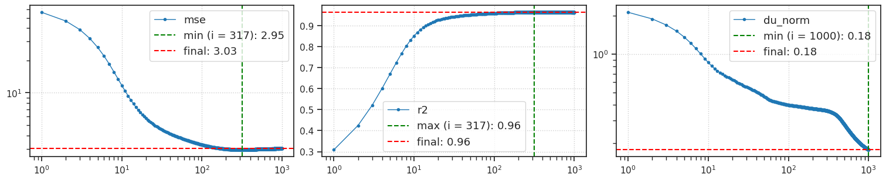
----------------------------------------------------------------------------------------------------
84%|██████████████████████████████████▍ | 369/440 [02:51<00:33, 2.15it/s]
[PROGRESS] 'poisson_<grad|lin>_vH16_t-4_b-6_k-512_mach-0_(2025_03_28,21:52).npy' saved at /home/hadi/Dropbox/git/jb-progress-2025/tmp/results_2025-03
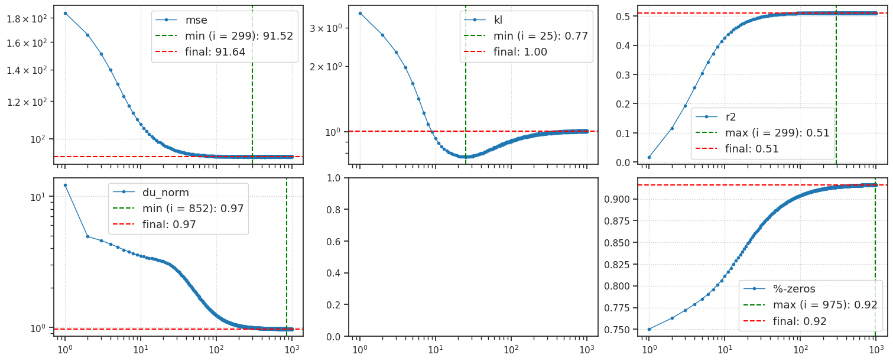
----------------------------------------------------------------------------------------------------
100%|████████████████████████████████████████▊| 438/440 [18:03<00:06, 3.15s/it]
[PROGRESS] 'poisson_<grad|lin>_vH16_t-16_b-24_k-512_mach-0_(2025_03_29,04:42).npy' saved at /home/hadi/Dropbox/git/jb-progress-2025/tmp/results_2025-03
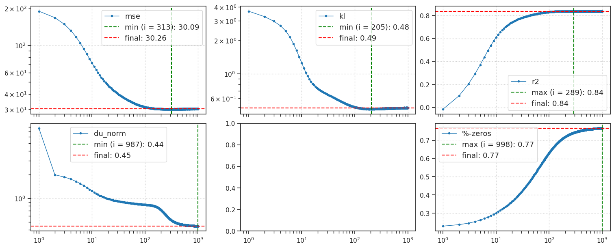
----------------------------------------------------------------------------------------------------
100%|████████████████████████████████████████▉| 439/440 [25:12<00:05, 5.00s/it]
[PROGRESS] 'poisson_<grad|lin>_vH16_t-32_b-48_k-512_mach-0_(2025_03_29,06:33).npy' saved at /home/hadi/Dropbox/git/jb-progress-2025/tmp/results_2025-03
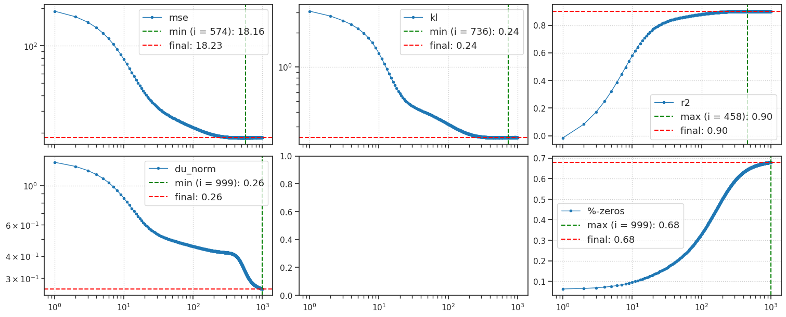
----------------------------------------------------------------------------------------------------
100%|█████████████████████████████████████████| 440/440 [30:16<00:00, 4.13s/it]
CPU times: user 1h 1min 35s, sys: 16min 38s, total: 1h 18min 13s
Wall time: 30min 16s
### Some g+relu and some Kyoto16
0%| | 0/433 [00:00<?, ?it/s]
[PROGRESS] 'gaussian+relu-<grad|lin>-EMNIST-t-16_b-16_k-512_mach-1_(2025_03_28,07:46).npy' saved at /home/hadi/Dropbox/git/jb-progress-2025/tmp/results_2025-03
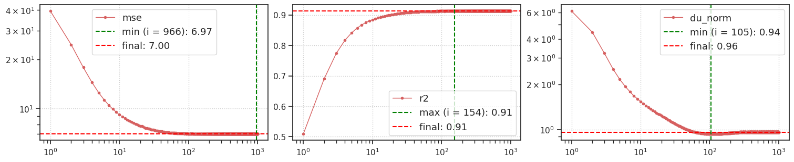
----------------------------------------------------------------------------------------------------
1%|▎ | 3/433 [03:08<7:31:08, 62.95s/it]
[PROGRESS] 'gaussian+relu-<grad|lin>-EMNIST-t-16_b-16_k-512_mach-2_(2025_03_28,07:44).npy' saved at /home/hadi/Dropbox/git/jb-progress-2025/tmp/results_2025-03
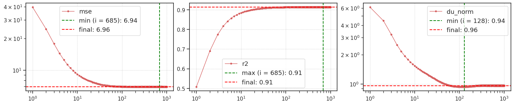
----------------------------------------------------------------------------------------------------
1%|▎ | 4/433 [06:28<12:45:40, 107.09s/it]
[PROGRESS] 'gaussian+relu-<grad|lin>-EMNIST-t-16_b-16_k-512_mach-3_(2025_03_28,07:45).npy' saved at /home/hadi/Dropbox/git/jb-progress-2025/tmp/results_2025-03
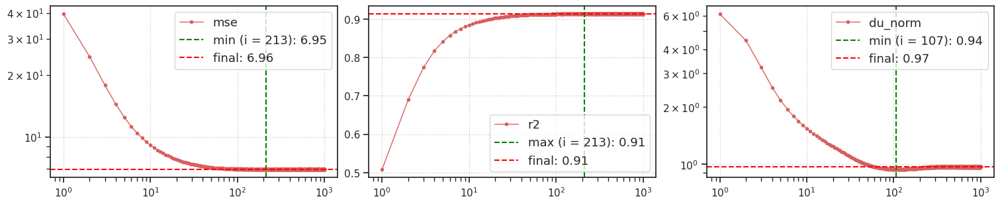
----------------------------------------------------------------------------------------------------
1%|▍ | 5/433 [09:41<15:58:03, 134.31s/it]
[PROGRESS] 'gaussian+relu-<grad|lin>-EMNIST-t-16_b-16_k-512_mach-4_(2025_03_28,07:55).npy' saved at /home/hadi/Dropbox/git/jb-progress-2025/tmp/results_2025-03
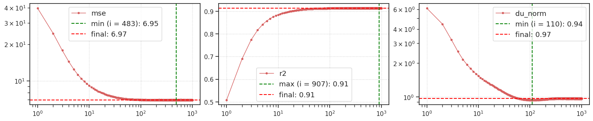
----------------------------------------------------------------------------------------------------
1%|▌ | 6/433 [12:57<18:10:00, 153.16s/it]
[PROGRESS] 'gaussian+sigmoid-<grad|lin>-Kyoto16-t-8_b-8_k-192_yoru-0_(2025_03_28,05:31).npy' saved at /home/hadi/Dropbox/git/jb-progress-2025/tmp/results_2025-03
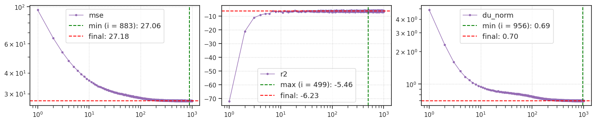
----------------------------------------------------------------------------------------------------
14%|█████▊ | 60/433 [14:56<51:19, 8.25s/it]
[PROGRESS] 'gaussian+sigmoid-<grad|lin>-Kyoto16-t-8_b-16_k-192_yoru-0_(2025_03_28,05:31).npy' saved at /home/hadi/Dropbox/git/jb-progress-2025/tmp/results_2025-03
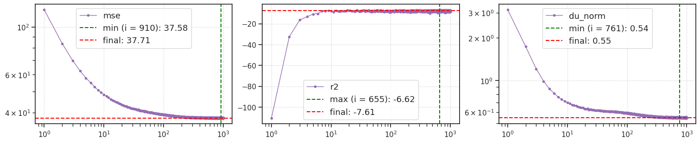
----------------------------------------------------------------------------------------------------
14%|█████▋ | 61/433 [16:55<1:08:12, 11.00s/it]
[PROGRESS] 'gaussian+sigmoid-<grad|lin>-Kyoto16-t-8_b-32_k-192_yoru-0_(2025_03_28,05:30).npy' saved at /home/hadi/Dropbox/git/jb-progress-2025/tmp/results_2025-03
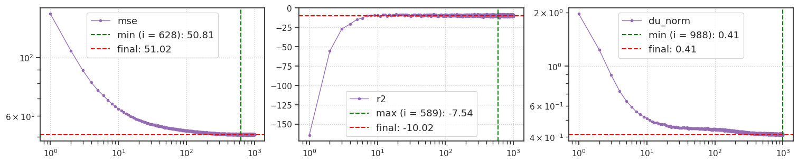
----------------------------------------------------------------------------------------------------
15%|█████▉ | 64/433 [18:50<1:23:44, 13.62s/it]
[PROGRESS] 'gaussian+sigmoid-<grad|lin>-Kyoto16-t-8_b-64_k-192_yoru-0_(2025_03_28,05:32).npy' saved at /home/hadi/Dropbox/git/jb-progress-2025/tmp/results_2025-03
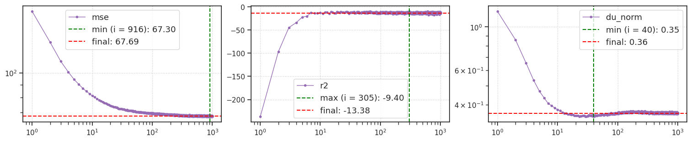
----------------------------------------------------------------------------------------------------
100%|█████████████████████████████████████████| 433/433 [20:51<00:00, 2.89s/it]
CPU times: user 3h 45min 55s, sys: 7min 1s, total: 3h 52min 56s
Wall time: 20min 51s
### Poisson EMNIST fits
0%| | 0/425 [00:00<?, ?it/s]
[PROGRESS] 'poisson-<grad|lin>-EMNIST-t-128_b-128_k-512_yoru-10_(2025_03_26,07:25).npy' saved at /home/hadi/Dropbox/git/jb-progress-2025/tmp/results_2025-03
----------------------------------------------------------------------------------------------------
84%|██████████████████████████████████▍ | 357/425 [03:13<00:36, 1.84it/s]
[PROGRESS] 'poisson-<grad|lin>-EMNIST-t-128_b-128_k-512_yoru-11_(2025_03_26,07:28).npy' saved at /home/hadi/Dropbox/git/jb-progress-2025/tmp/results_2025-03
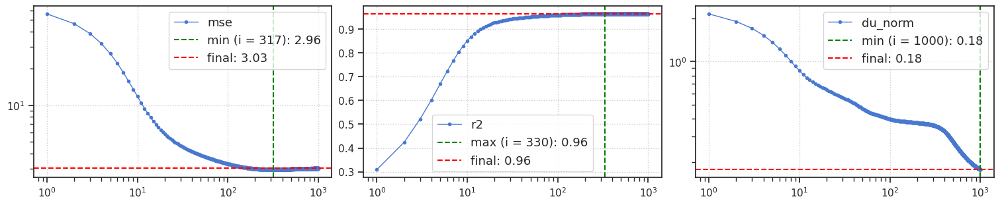
----------------------------------------------------------------------------------------------------
84%|██████████████████████████████████▌ | 358/425 [06:32<01:29, 1.33s/it]
[PROGRESS] 'poisson-<grad|lin>-EMNIST-t-128_b-128_k-512_yoru-12_(2025_03_27,16:17).npy' saved at /home/hadi/Dropbox/git/jb-progress-2025/tmp/results_2025-03
----------------------------------------------------------------------------------------------------
84%|██████████████████████████████████▋ | 359/425 [09:50<02:41, 2.45s/it]
[PROGRESS] 'poisson-<grad|lin>-EMNIST-t-128_b-128_k-512_yoru-13_(2025_03_27,15:45).npy' saved at /home/hadi/Dropbox/git/jb-progress-2025/tmp/results_2025-03
----------------------------------------------------------------------------------------------------
85%|██████████████████████████████████▋ | 360/425 [13:19<04:26, 4.10s/it]
missing: poisson-<grad|lin>-MNIST-t-128_b-128_k-512_yoru-1_(2025_03_24,04:18)
100%|█████████████████████████████████████████| 425/425 [13:19<00:00, 1.88s/it]
CPU times: user 4h 13min 4s, sys: 5min 34s, total: 4h 18min 39s
Wall time: 13min 19s
### Gaussian FashionMNIST fits
0%| | 0/420 [00:00<?, ?it/s]
[PROGRESS] 'gaussian-<grad|lin>-FashionMNIST-t-64_b-64_k-512_mach-10_(2025_03_27,03:35).npy' saved at /home/hadi/Dropbox/git/jb-progress-2025/tmp/results_2025-03
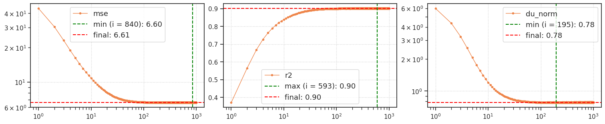
----------------------------------------------------------------------------------------------------
24%|█████████▊ | 101/420 [01:11<03:45, 1.42it/s]
[PROGRESS] 'gaussian-<grad|lin>-FashionMNIST-t-64_b-64_k-512_mach-11_(2025_03_27,00:09).npy' saved at /home/hadi/Dropbox/git/jb-progress-2025/tmp/results_2025-03
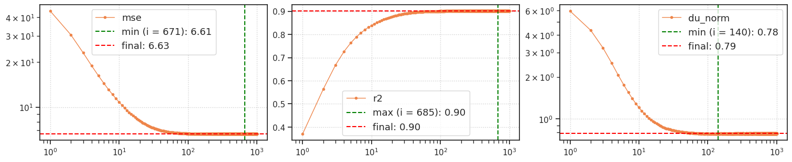
----------------------------------------------------------------------------------------------------
24%|█████████▉ | 102/420 [02:15<08:26, 1.59s/it]
[PROGRESS] 'gaussian-<grad|lin>-FashionMNIST-t-64_b-64_k-512_mach-12_(2025_03_27,01:20).npy' saved at /home/hadi/Dropbox/git/jb-progress-2025/tmp/results_2025-03
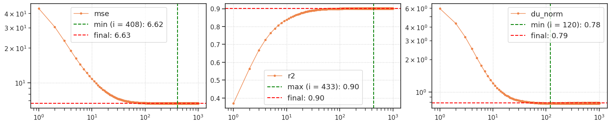
----------------------------------------------------------------------------------------------------
25%|██████████ | 103/420 [03:20<14:57, 2.83s/it]
[PROGRESS] 'gaussian-<grad|lin>-FashionMNIST-t-64_b-64_k-512_mach-13_(2025_03_27,01:55).npy' saved at /home/hadi/Dropbox/git/jb-progress-2025/tmp/results_2025-03
----------------------------------------------------------------------------------------------------
25%|██████████▏ | 104/420 [04:25<23:50, 4.53s/it]
[PROGRESS] 'gaussian-<grad|lin>-FashionMNIST-t-64_b-64_k-512_mach-14_(2025_03_27,04:12).npy' saved at /home/hadi/Dropbox/git/jb-progress-2025/tmp/results_2025-03
----------------------------------------------------------------------------------------------------
100%|█████████████████████████████████████████| 420/420 [05:32<00:00, 1.26it/s]
CPU times: user 2h 15min 7s, sys: 4min 18s, total: 2h 19min 25s
Wall time: 5min 32s
### Gaussian EMNIST fits
0%| | 0/415 [00:00<?, ?it/s]
[PROGRESS] 'gaussian+relu-<grad|lin>-EMNIST-t-32_b-32_k-512_mach-10_(2025_03_25,22:13).npy' saved at /home/hadi/Dropbox/git/jb-progress-2025/tmp/results_2025-03
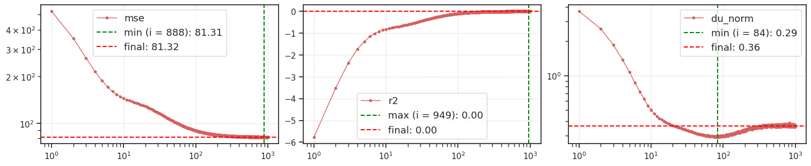
----------------------------------------------------------------------------------------------------
1%|▎ | 3/415 [02:22<5:25:38, 47.42s/it]
[PROGRESS] 'gaussian+relu-<grad|lin>-EMNIST-t-32_b-32_k-512_mach-11_(2025_03_25,20:40).npy' saved at /home/hadi/Dropbox/git/jb-progress-2025/tmp/results_2025-03
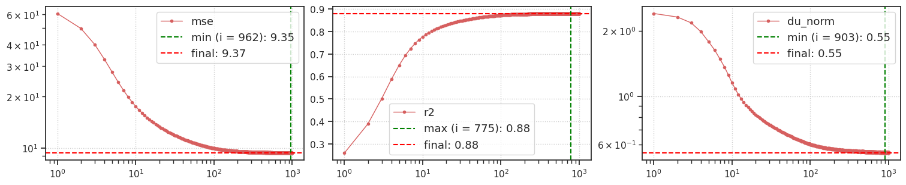
----------------------------------------------------------------------------------------------------
1%|▍ | 4/415 [04:46<8:58:11, 78.57s/it]
[PROGRESS] 'gaussian+relu-<grad|lin>-EMNIST-t-32_b-32_k-512_mach-12_(2025_03_25,22:00).npy' saved at /home/hadi/Dropbox/git/jb-progress-2025/tmp/results_2025-03
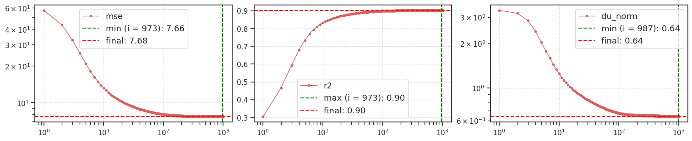
----------------------------------------------------------------------------------------------------
1%|▍ | 5/415 [07:06<11:10:43, 98.15s/it]
[PROGRESS] 'gaussian+relu-<grad|lin>-EMNIST-t-32_b-32_k-512_mach-13_(2025_03_25,20:29).npy' saved at /home/hadi/Dropbox/git/jb-progress-2025/tmp/results_2025-03
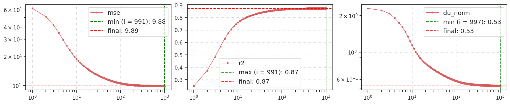
----------------------------------------------------------------------------------------------------
1%|▌ | 6/415 [09:28<12:42:00, 111.79s/it]
[PROGRESS] 'gaussian+relu-<grad|lin>-EMNIST-t-32_b-32_k-512_mach-14_(2025_03_25,21:58).npy' saved at /home/hadi/Dropbox/git/jb-progress-2025/tmp/results_2025-03
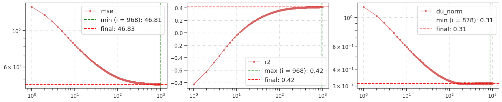
----------------------------------------------------------------------------------------------------
2%|▋ | 7/415 [11:52<13:46:42, 121.58s/it]
[PROGRESS] 'gaussian+relu-<grad|lin>-FashionMNIST-t-16_b-16_k-512_mach-10_(2025_03_26,05:27).npy' saved at /home/hadi/Dropbox/git/jb-progress-2025/tmp/results_2025-03
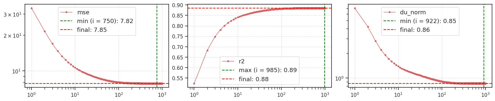
----------------------------------------------------------------------------------------------------
3%|█ | 11/415 [12:58<6:07:50, 54.63s/it]
[PROGRESS] 'gaussian+relu-<grad|lin>-FashionMNIST-t-16_b-16_k-512_mach-11_(2025_03_26,05:27).npy' saved at /home/hadi/Dropbox/git/jb-progress-2025/tmp/results_2025-03
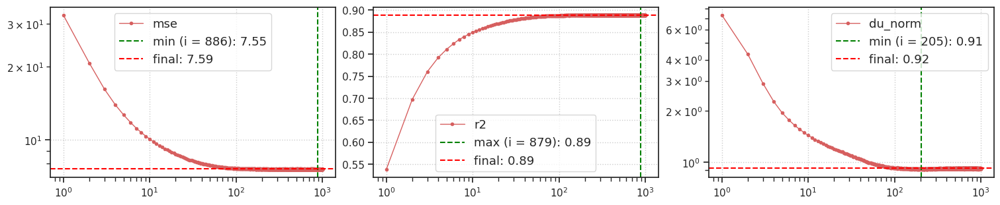
----------------------------------------------------------------------------------------------------
3%|█▏ | 12/415 [14:01<6:17:08, 56.15s/it]
[PROGRESS] 'gaussian+relu-<grad|lin>-FashionMNIST-t-16_b-16_k-512_mach-12_(2025_03_26,05:51).npy' saved at /home/hadi/Dropbox/git/jb-progress-2025/tmp/results_2025-03
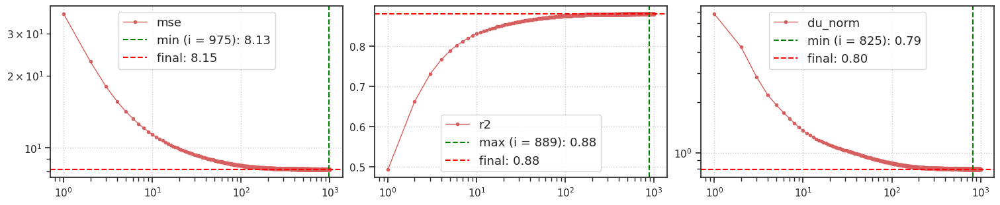
----------------------------------------------------------------------------------------------------
3%|█▎ | 13/415 [15:09<6:32:41, 58.61s/it]
[PROGRESS] 'gaussian+relu-<grad|lin>-FashionMNIST-t-16_b-16_k-512_mach-13_(2025_03_26,05:56).npy' saved at /home/hadi/Dropbox/git/jb-progress-2025/tmp/results_2025-03
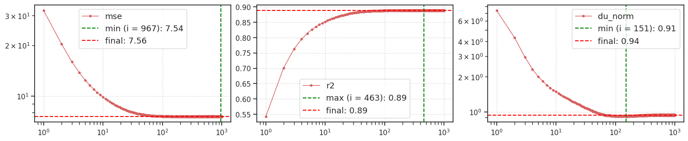
----------------------------------------------------------------------------------------------------
3%|█▎ | 14/415 [16:10<6:35:03, 59.11s/it]
[PROGRESS] 'gaussian+relu-<grad|lin>-FashionMNIST-t-16_b-16_k-512_mach-14_(2025_03_26,05:57).npy' saved at /home/hadi/Dropbox/git/jb-progress-2025/tmp/results_2025-03
----------------------------------------------------------------------------------------------------
4%|█▍ | 15/415 [17:16<6:45:22, 60.81s/it]
[PROGRESS] 'gaussian-<grad|lin>-EMNIST-t-64_b-64_k-512_mach-10_(2025_03_26,08:57).npy' saved at /home/hadi/Dropbox/git/jb-progress-2025/tmp/results_2025-03
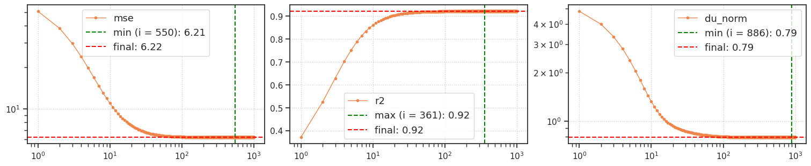
----------------------------------------------------------------------------------------------------
22%|█████████▎ | 92/415 [19:32<20:48, 3.86s/it]
[PROGRESS] 'gaussian-<grad|lin>-EMNIST-t-64_b-64_k-512_mach-11_(2025_03_26,04:24).npy' saved at /home/hadi/Dropbox/git/jb-progress-2025/tmp/results_2025-03
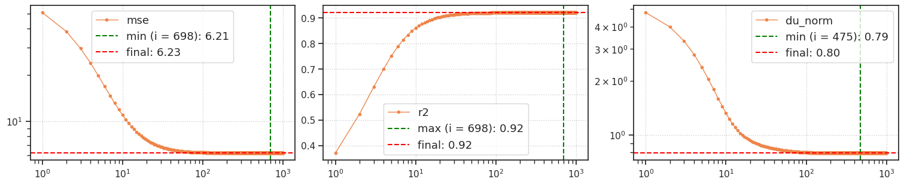
----------------------------------------------------------------------------------------------------
22%|█████████▍ | 93/415 [21:48<33:12, 6.19s/it]
[PROGRESS] 'gaussian-<grad|lin>-EMNIST-t-64_b-64_k-512_mach-12_(2025_03_26,08:30).npy' saved at /home/hadi/Dropbox/git/jb-progress-2025/tmp/results_2025-03
----------------------------------------------------------------------------------------------------
23%|█████████▌ | 94/415 [24:04<50:07, 9.37s/it]
[PROGRESS] 'gaussian-<grad|lin>-EMNIST-t-64_b-64_k-512_mach-13_(2025_03_26,04:18).npy' saved at /home/hadi/Dropbox/git/jb-progress-2025/tmp/results_2025-03
----------------------------------------------------------------------------------------------------
23%|█████████▏ | 95/415 [26:26<1:13:51, 13.85s/it]
[PROGRESS] 'gaussian-<grad|lin>-EMNIST-t-64_b-64_k-512_mach-14_(2025_03_26,09:05).npy' saved at /home/hadi/Dropbox/git/jb-progress-2025/tmp/results_2025-03
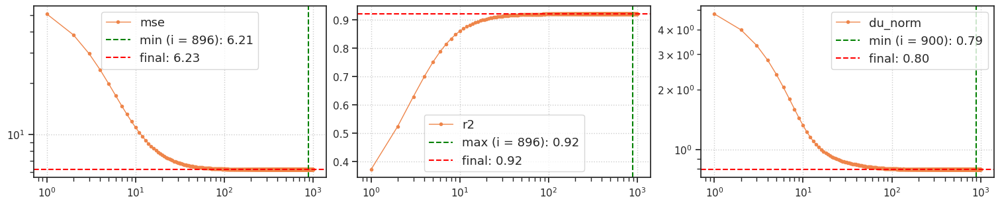
----------------------------------------------------------------------------------------------------
100%|█████████████████████████████████████████| 415/415 [29:16<00:00, 4.23s/it]
CPU times: user 11h 17min 48s, sys: 17min 49s, total: 11h 35min 37s
Wall time: 29min 16s
### The big loop
0%| | 0/396 [00:00<?, ?it/s]
[PROGRESS] 'gaussian+relu-<grad|lin>-BALLS64-t-32_b-64_k-96_yoru-0_(2025_03_17,11:58).npy' saved at /home/hadi/Dropbox/git/jb-progress-2025/tmp/results_2025-03
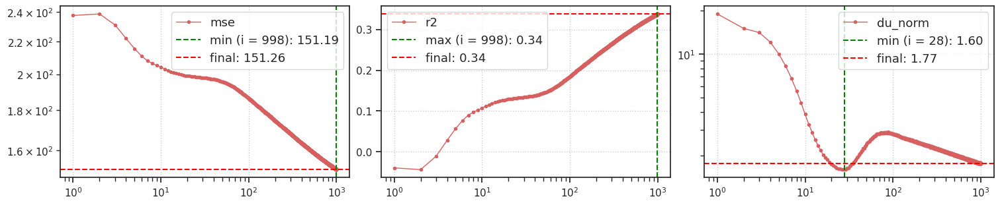
----------------------------------------------------------------------------------------------------
0%| | 1/396 [02:32<16:46:54, 152.95s/it]
[PROGRESS] 'gaussian+relu-<grad|lin>-EMNIST-t-16_b-16_k-512_mach-0_(2025_03_22,01:11).npy' saved at /home/hadi/Dropbox/git/jb-progress-2025/tmp/results_2025-03
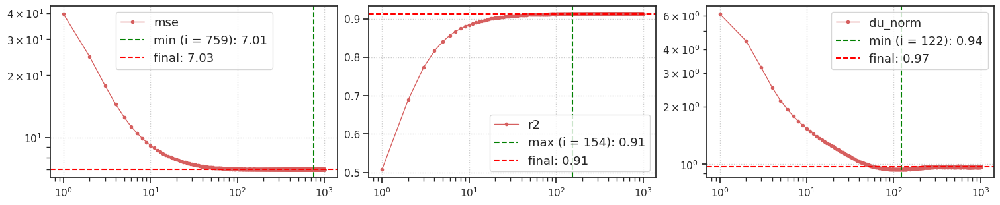
----------------------------------------------------------------------------------------------------
1%|▏ | 2/396 [04:49<15:41:49, 143.43s/it]
[PROGRESS] 'gaussian+relu-<grad|lin>-FashionMNIST-t-4_b-4_k-512_yoru-0_(2025_03_18,20:22).npy' saved at /home/hadi/Dropbox/git/jb-progress-2025/tmp/results_2025-03
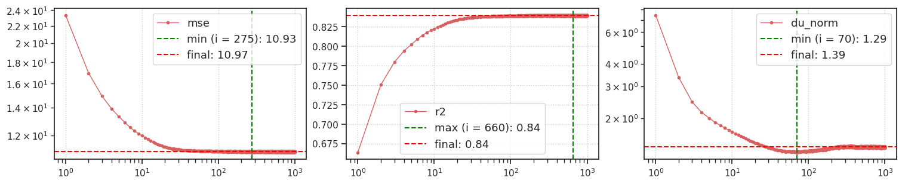
----------------------------------------------------------------------------------------------------
1%|▎ | 3/396 [05:51<11:34:40, 106.06s/it]
[PROGRESS] 'gaussian+relu-<grad|lin>-FashionMNIST-t-8_b-8_k-512_yoru-0_(2025_03_18,21:20).npy' saved at /home/hadi/Dropbox/git/jb-progress-2025/tmp/results_2025-03
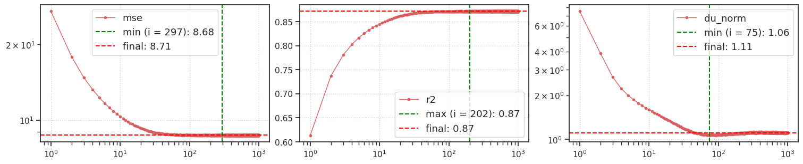
----------------------------------------------------------------------------------------------------
1%|▍ | 4/396 [06:52<9:36:21, 88.22s/it]
[PROGRESS] 'gaussian+relu-<grad|lin>-FashionMNIST-t-16_b-16_k-512_chewie-0_(2025_03_17,23:36).npy' saved at /home/hadi/Dropbox/git/jb-progress-2025/tmp/results_2025-03
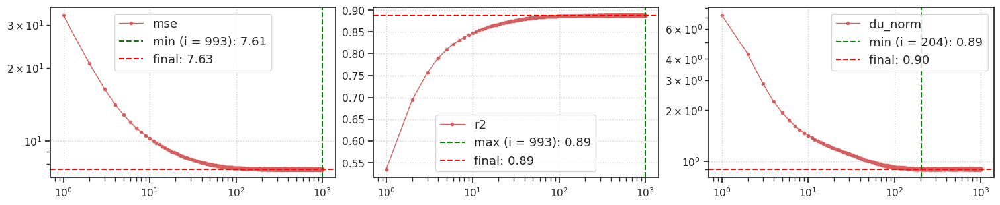
----------------------------------------------------------------------------------------------------
1%|▌ | 5/396 [07:55<8:35:46, 79.15s/it]
[PROGRESS] 'gaussian+relu-<grad|lin>-FashionMNIST-t-32_b-32_k-512_chewie-0_(2025_03_18,04:15).npy' saved at /home/hadi/Dropbox/git/jb-progress-2025/tmp/results_2025-03
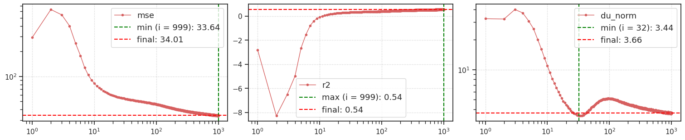
----------------------------------------------------------------------------------------------------
2%|▌ | 6/396 [08:55<7:51:43, 72.57s/it]
[PROGRESS] 'gaussian+relu-<grad|lin>-FashionMNIST-t-32_b-32_k-512_chewie-0_(2025_03_18,14:32).npy' saved at /home/hadi/Dropbox/git/jb-progress-2025/tmp/results_2025-03
----------------------------------------------------------------------------------------------------
2%|▋ | 7/396 [09:53<7:21:19, 68.07s/it]
[PROGRESS] 'gaussian+relu-<grad|lin>-MNIST-t-4_b-4_k-512_yoru-0_(2025_03_20,16:01).npy' saved at /home/hadi/Dropbox/git/jb-progress-2025/tmp/results_2025-03
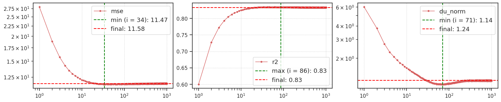
----------------------------------------------------------------------------------------------------
3%|█ | 10/396 [12:49<6:35:28, 61.47s/it]
[PROGRESS] 'gaussian+relu-<grad|lin>-MNIST-t-8_b-8_k-512_yoru-0_(2025_03_20,17:03).npy' saved at /home/hadi/Dropbox/git/jb-progress-2025/tmp/results_2025-03
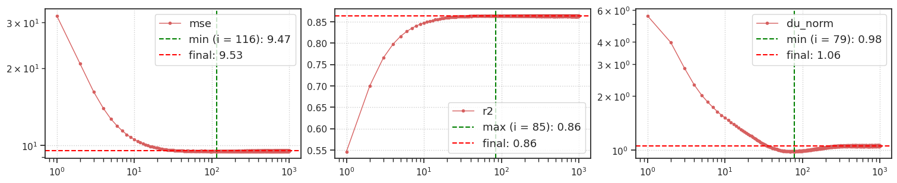
----------------------------------------------------------------------------------------------------
3%|█ | 11/396 [13:48<6:29:17, 60.67s/it]
[PROGRESS] 'gaussian+relu-<grad|lin>-MNIST-t-16_b-16_k-512_mach-0_(2025_03_21,06:19).npy' saved at /home/hadi/Dropbox/git/jb-progress-2025/tmp/results_2025-03
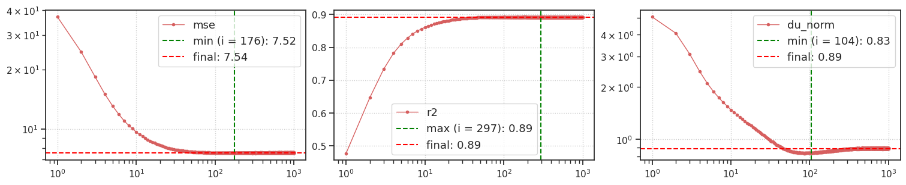
----------------------------------------------------------------------------------------------------
3%|█▏ | 12/396 [14:47<6:25:38, 60.26s/it]
[PROGRESS] 'gaussian+relu-<grad|lin>-MNIST-t-32_b-32_k-512_mach-0_(2025_03_20,23:06).npy' saved at /home/hadi/Dropbox/git/jb-progress-2025/tmp/results_2025-03
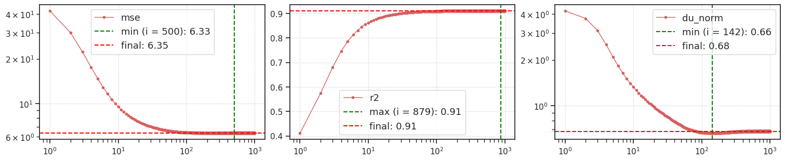
----------------------------------------------------------------------------------------------------
3%|█▎ | 13/396 [15:47<6:24:32, 60.24s/it]
[PROGRESS] 'gaussian+relu-<grad|lin>-MNIST-t-32_b-32_k-512_mach-3_(2025_03_23,20:16).npy' saved at /home/hadi/Dropbox/git/jb-progress-2025/tmp/results_2025-03
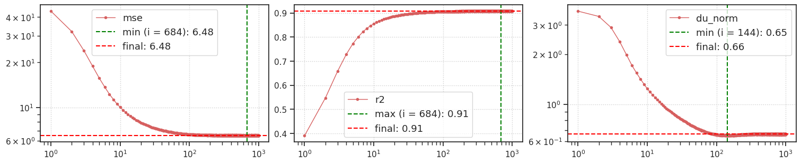
----------------------------------------------------------------------------------------------------
4%|█▍ | 14/396 [16:47<6:22:25, 60.07s/it]
[PROGRESS] 'gaussian+relu-<grad|lin>-MNIST-t-32_b-32_k-512_yoru-2_(2025_03_23,21:07).npy' saved at /home/hadi/Dropbox/git/jb-progress-2025/tmp/results_2025-03
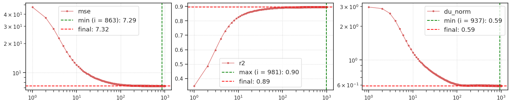
----------------------------------------------------------------------------------------------------
4%|█▌ | 15/396 [17:47<6:21:19, 60.05s/it]
[PROGRESS] 'gaussian+relu-<grad|lin>-MNIST-t-64_b-64_k-512_mach-0_(2025_03_20,13:50).npy' saved at /home/hadi/Dropbox/git/jb-progress-2025/tmp/results_2025-03
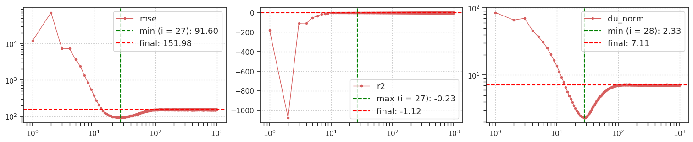
----------------------------------------------------------------------------------------------------
4%|█▌ | 16/396 [18:47<6:19:57, 59.99s/it]
[PROGRESS] 'gaussian+relu-<grad|lin>-MNIST-t-64_b-64_k-512_mach-0_(2025_03_21,05:41).npy' saved at /home/hadi/Dropbox/git/jb-progress-2025/tmp/results_2025-03
----------------------------------------------------------------------------------------------------
4%|█▋ | 17/396 [19:47<6:19:28, 60.08s/it]
[PROGRESS] 'gaussian+relu-<grad|lin>-MNIST-t-128_b-128_k-512_yoru-0_(2025_03_18,19:58).npy' saved at /home/hadi/Dropbox/git/jb-progress-2025/tmp/results_2025-03
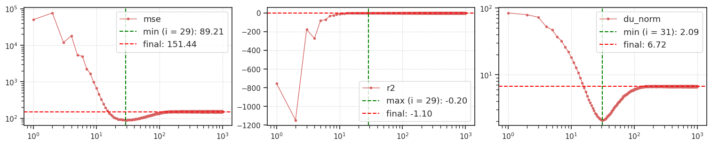
----------------------------------------------------------------------------------------------------
5%|█▊ | 18/396 [20:47<6:17:33, 59.93s/it]
[PROGRESS] 'gaussian+relu-<grad|lin>-SVHN-t-16_b-16_k-512_mach-0_(2025_03_22,00:44).npy' saved at /home/hadi/Dropbox/git/jb-progress-2025/tmp/results_2025-03
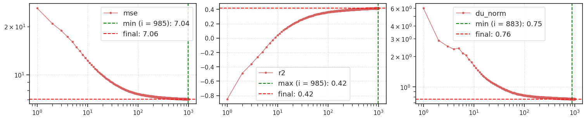
----------------------------------------------------------------------------------------------------
5%|█▉ | 19/396 [22:14<7:08:38, 68.22s/it]
[PROGRESS] 'gaussian+relu-<grad|lin>-vH16-t-8_b-4_mach-1_(2025_03_06,22:33).npy' saved at /home/hadi/Dropbox/git/jb-progress-2025/tmp/results_2025-03
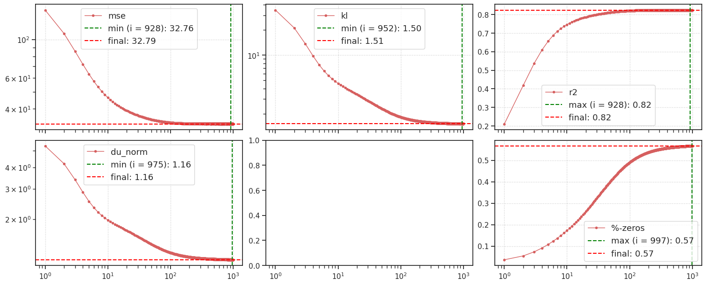
----------------------------------------------------------------------------------------------------
5%|█▉ | 20/396 [28:16<16:19:30, 156.30s/it]
[PROGRESS] 'gaussian+relu-<grad|lin>-vH16-t-8_b-8_mach-1_(2025_03_07,04:39).npy' saved at /home/hadi/Dropbox/git/jb-progress-2025/tmp/results_2025-03
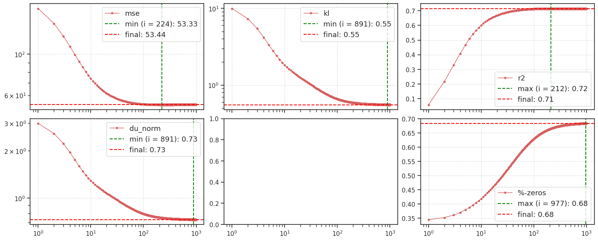
----------------------------------------------------------------------------------------------------
5%|██ | 21/396 [34:14<22:35:09, 216.83s/it]
[PROGRESS] 'gaussian+relu-<grad|lin>-vH16-t-8_b-10_mach-1_(2025_03_07,08:11).npy' saved at /home/hadi/Dropbox/git/jb-progress-2025/tmp/results_2025-03
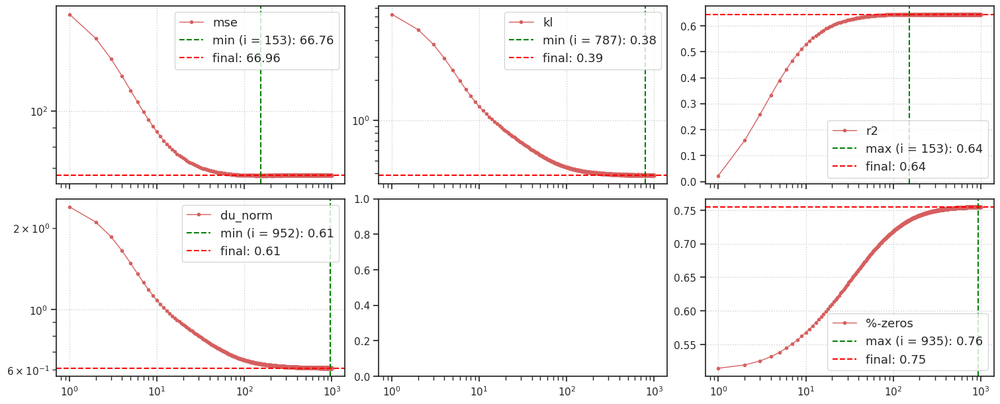
----------------------------------------------------------------------------------------------------
6%|██ | 22/396 [40:02<26:36:38, 256.15s/it]
[PROGRESS] 'gaussian+relu-<grad|lin>-vH16-t-8_b-12_mach-1_(2025_03_08,00:39).npy' saved at /home/hadi/Dropbox/git/jb-progress-2025/tmp/results_2025-03
----------------------------------------------------------------------------------------------------
6%|██▏ | 23/396 [44:31<26:57:37, 260.21s/it]
[PROGRESS] 'gaussian+relu-<grad|lin>-vH16-t-8_b-16_mach-1_(2025_03_06,22:32).npy' saved at /home/hadi/Dropbox/git/jb-progress-2025/tmp/results_2025-03
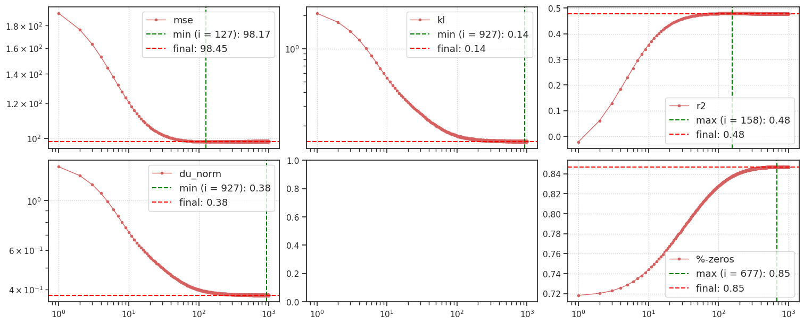
----------------------------------------------------------------------------------------------------
6%|██▎ | 24/396 [50:05<29:10:23, 282.32s/it]
[PROGRESS] 'gaussian+relu-<grad|lin>-vH16-t-8_b-20_mach-1_(2025_03_07,04:45).npy' saved at /home/hadi/Dropbox/git/jb-progress-2025/tmp/results_2025-03
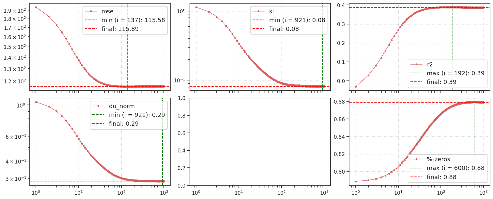
----------------------------------------------------------------------------------------------------
6%|██▍ | 25/396 [53:54<27:27:28, 266.44s/it]
[PROGRESS] 'gaussian+relu-<grad|lin>-vH16-t-8_b-24_mach-1_(2025_03_07,08:20).npy' saved at /home/hadi/Dropbox/git/jb-progress-2025/tmp/results_2025-03
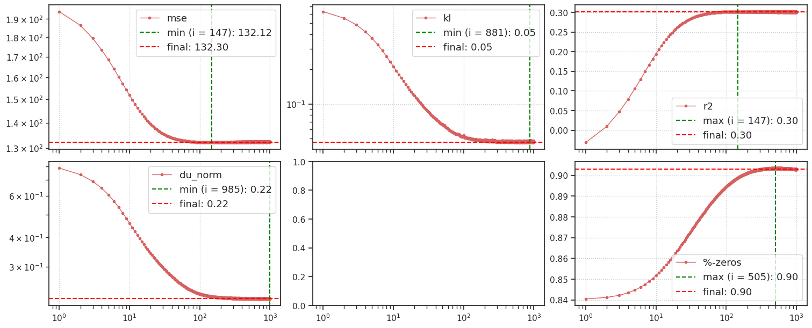
----------------------------------------------------------------------------------------------------
7%|██▍ | 26/396 [57:48<26:21:57, 256.53s/it]
[PROGRESS] 'gaussian+relu-<grad|lin>-vH16-t-8_b-32_mach-1_(2025_03_08,00:39).npy' saved at /home/hadi/Dropbox/git/jb-progress-2025/tmp/results_2025-03
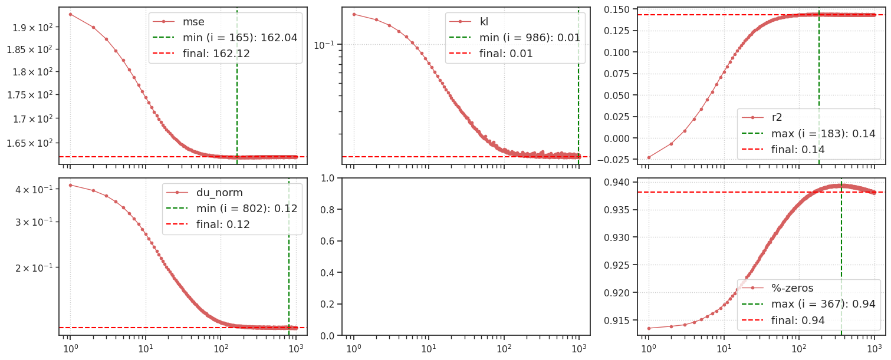
----------------------------------------------------------------------------------------------------
7%|██▍ | 27/396 [1:01:40<25:32:20, 249.16s/it]
[PROGRESS] 'gaussian+relu-<grad|lin>-vH16-t-16_b-8_mach-1_(2025_03_07,04:43).npy' saved at /home/hadi/Dropbox/git/jb-progress-2025/tmp/results_2025-03
----------------------------------------------------------------------------------------------------
7%|██▌ | 28/396 [1:05:32<24:56:26, 243.99s/it]
[PROGRESS] 'gaussian+relu-<grad|lin>-vH16-t-16_b-12_mach-1_(2025_03_07,01:06).npy' saved at /home/hadi/Dropbox/git/jb-progress-2025/tmp/results_2025-03
----------------------------------------------------------------------------------------------------
7%|██▋ | 29/396 [1:09:25<24:32:12, 240.69s/it]
[PROGRESS] 'gaussian+relu-<grad|lin>-vH16-t-16_b-16_mach-1_(2025_03_07,14:27).npy' saved at /home/hadi/Dropbox/git/jb-progress-2025/tmp/results_2025-03
----------------------------------------------------------------------------------------------------
8%|██▋ | 30/396 [1:13:16<24:11:24, 237.93s/it]
[PROGRESS] 'gaussian+relu-<grad|lin>-vH16-t-16_b-20_mach-1_(2025_03_07,21:44).npy' saved at /home/hadi/Dropbox/git/jb-progress-2025/tmp/results_2025-03
----------------------------------------------------------------------------------------------------
8%|██▊ | 31/396 [1:17:07<23:55:07, 235.91s/it]
[PROGRESS] 'gaussian+relu-<grad|lin>-vH16-t-16_b-24_mach-1_(2025_03_07,04:45).npy' saved at /home/hadi/Dropbox/git/jb-progress-2025/tmp/results_2025-03
----------------------------------------------------------------------------------------------------
8%|██▉ | 32/396 [1:21:00<23:44:26, 234.80s/it]
[PROGRESS] 'gaussian+relu-<grad|lin>-vH16-t-16_b-32_mach-1_(2025_03_07,01:12).npy' saved at /home/hadi/Dropbox/git/jb-progress-2025/tmp/results_2025-03
----------------------------------------------------------------------------------------------------
8%|███ | 33/396 [1:24:48<23:29:18, 232.94s/it]
[PROGRESS] 'gaussian+relu-<grad|lin>-vH16-t-16_b-48_mach-1_(2025_03_07,14:34).npy' saved at /home/hadi/Dropbox/git/jb-progress-2025/tmp/results_2025-03
----------------------------------------------------------------------------------------------------
9%|███ | 34/396 [1:28:34<23:12:08, 230.74s/it]
[PROGRESS] 'gaussian+relu-<grad|lin>-vH16-t-16_b-64_mach-1_(2025_03_07,21:45).npy' saved at /home/hadi/Dropbox/git/jb-progress-2025/tmp/results_2025-03
----------------------------------------------------------------------------------------------------
9%|███▏ | 35/396 [1:32:20<22:59:40, 229.31s/it]
[PROGRESS] 'gaussian+relu-<grad|lin>-vH16-t-32_b-8_mach-1_(2025_03_07,15:40).npy' saved at /home/hadi/Dropbox/git/jb-progress-2025/tmp/results_2025-03
----------------------------------------------------------------------------------------------------
9%|███▎ | 36/396 [1:36:07<22:51:10, 228.53s/it]
[PROGRESS] 'gaussian+relu-<grad|lin>-vH16-t-32_b-16_mach-1_(2025_03_08,00:22).npy' saved at /home/hadi/Dropbox/git/jb-progress-2025/tmp/results_2025-03
----------------------------------------------------------------------------------------------------
9%|███▎ | 37/396 [1:39:58<22:52:18, 229.36s/it]
[PROGRESS] 'gaussian+relu-<grad|lin>-vH16-t-32_b-24_mach-1_(2025_03_07,06:07).npy' saved at /home/hadi/Dropbox/git/jb-progress-2025/tmp/results_2025-03
----------------------------------------------------------------------------------------------------
10%|███▍ | 38/396 [1:43:51<22:55:27, 230.52s/it]
[PROGRESS] 'gaussian+relu-<grad|lin>-vH16-t-32_b-32_mach-1_(2025_03_07,16:48).npy' saved at /home/hadi/Dropbox/git/jb-progress-2025/tmp/results_2025-03
----------------------------------------------------------------------------------------------------
10%|███▌ | 39/396 [1:47:44<22:55:45, 231.22s/it]
[PROGRESS] 'gaussian+relu-<grad|lin>-vH16-t-32_b-40_mach-1_(2025_03_07,15:33).npy' saved at /home/hadi/Dropbox/git/jb-progress-2025/tmp/results_2025-03
----------------------------------------------------------------------------------------------------
10%|███▋ | 40/396 [1:51:36<22:53:48, 231.54s/it]
[PROGRESS] 'gaussian+relu-<grad|lin>-vH16-t-32_b-48_mach-1_(2025_03_08,00:03).npy' saved at /home/hadi/Dropbox/git/jb-progress-2025/tmp/results_2025-03
----------------------------------------------------------------------------------------------------
10%|███▋ | 41/396 [1:55:28<22:50:40, 231.66s/it]
[PROGRESS] 'gaussian+relu-<grad|lin>-vH16-t-32_b-64_mach-1_(2025_03_07,06:09).npy' saved at /home/hadi/Dropbox/git/jb-progress-2025/tmp/results_2025-03
----------------------------------------------------------------------------------------------------
11%|███▊ | 42/396 [1:59:20<22:47:31, 231.78s/it]
[PROGRESS] 'gaussian+relu-<grad|lin>-vH16-t-32_b-96_mach-1_(2025_03_07,16:52).npy' saved at /home/hadi/Dropbox/git/jb-progress-2025/tmp/results_2025-03
----------------------------------------------------------------------------------------------------
11%|███▉ | 43/396 [2:03:13<22:45:58, 232.18s/it]
[PROGRESS] 'gaussian+sigmoid-<grad|lin>-Kyoto16-t-8_b-16_k-256_mach-0_(2025_03_21,00:55).npy' saved at /home/hadi/Dropbox/git/jb-progress-2025/tmp/results_2025-03
----------------------------------------------------------------------------------------------------
11%|████ | 44/396 [2:04:09<17:30:50, 179.12s/it]
[PROGRESS] 'gaussian+sigmoid-<grad|lin>-Kyoto16-t-8_b-16_k-512_mach-0_(2025_03_20,22:04).npy' saved at /home/hadi/Dropbox/git/jb-progress-2025/tmp/results_2025-03
----------------------------------------------------------------------------------------------------
11%|████ | 45/396 [2:05:37<14:49:16, 152.01s/it]
[PROGRESS] 'gaussian+sigmoid-<grad|lin>-Kyoto16-t-16_b-32_k-256_mach-0_(2025_03_18,06:41).npy' saved at /home/hadi/Dropbox/git/jb-progress-2025/tmp/results_2025-03
----------------------------------------------------------------------------------------------------
12%|████▏ | 46/396 [2:06:31<11:55:01, 122.58s/it]
[PROGRESS] 'gaussian+sigmoid-<grad|lin>-Kyoto16-t-16_b-32_k-256_mach-0_(2025_03_18,16:22).npy' saved at /home/hadi/Dropbox/git/jb-progress-2025/tmp/results_2025-03
----------------------------------------------------------------------------------------------------
12%|████▍ | 47/396 [2:07:26<9:54:07, 102.14s/it]
[PROGRESS] 'gaussian+sigmoid-<grad|lin>-Kyoto16-t-32_b-64_k-256_mach-0_(2025_03_19,02:47).npy' saved at /home/hadi/Dropbox/git/jb-progress-2025/tmp/results_2025-03
----------------------------------------------------------------------------------------------------
12%|████▌ | 48/396 [2:08:21<8:31:04, 88.12s/it]
[PROGRESS] 'gaussian+sigmoid-<grad|lin>-Kyoto16-t-64_b-64_k-256_mach-0_(2025_03_19,20:19).npy' saved at /home/hadi/Dropbox/git/jb-progress-2025/tmp/results_2025-03
----------------------------------------------------------------------------------------------------
12%|████▋ | 49/396 [2:09:15<7:30:16, 77.86s/it]
[PROGRESS] 'gaussian+sigmoid-<grad|lin>-vH16-t-16_b-32_k-256_mach-0_(2025_03_18,06:34).npy' saved at /home/hadi/Dropbox/git/jb-progress-2025/tmp/results_2025-03
----------------------------------------------------------------------------------------------------
13%|████▊ | 50/396 [2:11:31<9:08:54, 95.19s/it]
[PROGRESS] 'gaussian+sigmoid-<grad|lin>-vH16-t-16_b-32_k-256_mach-0_(2025_03_18,16:19).npy' saved at /home/hadi/Dropbox/git/jb-progress-2025/tmp/results_2025-03
----------------------------------------------------------------------------------------------------
13%|████▋ | 51/396 [2:13:44<10:13:42, 106.73s/it]
[PROGRESS] 'gaussian+sigmoid-<grad|lin>-vH16-t-16_b-32_k-256_mach-0_(2025_03_18,23:23).npy' saved at /home/hadi/Dropbox/git/jb-progress-2025/tmp/results_2025-03
----------------------------------------------------------------------------------------------------
13%|████▋ | 52/396 [2:16:01<11:03:58, 115.81s/it]
[PROGRESS] 'gaussian+sigmoid-<grad|lin>-vH16-t-32_b-64_k-256_mach-0_(2025_03_19,02:45).npy' saved at /home/hadi/Dropbox/git/jb-progress-2025/tmp/results_2025-03
----------------------------------------------------------------------------------------------------
13%|████▊ | 53/396 [2:18:19<11:39:55, 122.44s/it]
[PROGRESS] 'gaussian+softplus-<grad|lin>-vH16-t-8_b-4_mach-1_(2025_03_06,22:23).npy' saved at /home/hadi/Dropbox/git/jb-progress-2025/tmp/results_2025-03
----------------------------------------------------------------------------------------------------
14%|████▉ | 54/396 [2:22:11<14:44:18, 155.14s/it]
[PROGRESS] 'gaussian+softplus-<grad|lin>-vH16-t-8_b-8_mach-1_(2025_03_07,04:20).npy' saved at /home/hadi/Dropbox/git/jb-progress-2025/tmp/results_2025-03
----------------------------------------------------------------------------------------------------
14%|█████ | 55/396 [2:26:00<16:48:47, 177.50s/it]
[PROGRESS] 'gaussian+softplus-<grad|lin>-vH16-t-8_b-10_mach-1_(2025_03_07,07:49).npy' saved at /home/hadi/Dropbox/git/jb-progress-2025/tmp/results_2025-03
----------------------------------------------------------------------------------------------------
14%|█████ | 56/396 [2:29:50<18:14:41, 193.18s/it]
[PROGRESS] 'gaussian+softplus-<grad|lin>-vH16-t-8_b-12_mach-1_(2025_03_07,23:24).npy' saved at /home/hadi/Dropbox/git/jb-progress-2025/tmp/results_2025-03
----------------------------------------------------------------------------------------------------
14%|█████▏ | 57/396 [2:33:41<19:15:03, 204.43s/it]
[PROGRESS] 'gaussian+softplus-<grad|lin>-vH16-t-8_b-16_mach-1_(2025_03_06,22:21).npy' saved at /home/hadi/Dropbox/git/jb-progress-2025/tmp/results_2025-03
----------------------------------------------------------------------------------------------------
15%|█████▎ | 58/396 [2:37:31<19:54:42, 212.08s/it]
[PROGRESS] 'gaussian+softplus-<grad|lin>-vH16-t-8_b-20_mach-1_(2025_03_07,04:10).npy' saved at /home/hadi/Dropbox/git/jb-progress-2025/tmp/results_2025-03
----------------------------------------------------------------------------------------------------
15%|█████▎ | 59/396 [2:41:17<20:15:19, 216.38s/it]
[PROGRESS] 'gaussian+softplus-<grad|lin>-vH16-t-8_b-24_mach-1_(2025_03_07,07:35).npy' saved at /home/hadi/Dropbox/git/jb-progress-2025/tmp/results_2025-03
----------------------------------------------------------------------------------------------------
15%|█████▍ | 60/396 [2:45:07<20:33:57, 220.35s/it]
[PROGRESS] 'gaussian+softplus-<grad|lin>-vH16-t-8_b-32_mach-1_(2025_03_07,23:41).npy' saved at /home/hadi/Dropbox/git/jb-progress-2025/tmp/results_2025-03
----------------------------------------------------------------------------------------------------
15%|█████▌ | 61/396 [2:49:00<20:51:29, 224.15s/it]
[PROGRESS] 'gaussian+softplus-<grad|lin>-vH16-t-16_b-8_mach-1_(2025_03_07,04:22).npy' saved at /home/hadi/Dropbox/git/jb-progress-2025/tmp/results_2025-03
----------------------------------------------------------------------------------------------------
16%|█████▋ | 62/396 [2:52:48<20:53:45, 225.23s/it]
[PROGRESS] 'gaussian+softplus-<grad|lin>-vH16-t-16_b-12_mach-1_(2025_03_07,00:54).npy' saved at /home/hadi/Dropbox/git/jb-progress-2025/tmp/results_2025-03
----------------------------------------------------------------------------------------------------
16%|█████▋ | 63/396 [2:56:39<20:59:37, 226.96s/it]
[PROGRESS] 'gaussian+softplus-<grad|lin>-vH16-t-16_b-16_mach-1_(2025_03_07,13:45).npy' saved at /home/hadi/Dropbox/git/jb-progress-2025/tmp/results_2025-03
----------------------------------------------------------------------------------------------------
16%|█████▊ | 64/396 [3:00:30<21:02:37, 228.18s/it]
[PROGRESS] 'gaussian+softplus-<grad|lin>-vH16-t-16_b-20_mach-1_(2025_03_07,20:38).npy' saved at /home/hadi/Dropbox/git/jb-progress-2025/tmp/results_2025-03
----------------------------------------------------------------------------------------------------
16%|█████▉ | 65/396 [3:04:23<21:07:04, 229.68s/it]
[PROGRESS] 'gaussian+softplus-<grad|lin>-vH16-t-16_b-24_mach-1_(2025_03_07,04:13).npy' saved at /home/hadi/Dropbox/git/jb-progress-2025/tmp/results_2025-03
----------------------------------------------------------------------------------------------------
17%|██████ | 66/396 [3:08:14<21:05:30, 230.09s/it]
[PROGRESS] 'gaussian+softplus-<grad|lin>-vH16-t-16_b-32_mach-1_(2025_03_07,00:48).npy' saved at /home/hadi/Dropbox/git/jb-progress-2025/tmp/results_2025-03
----------------------------------------------------------------------------------------------------
17%|██████ | 67/396 [3:12:05<21:02:59, 230.33s/it]
[PROGRESS] 'gaussian+softplus-<grad|lin>-vH16-t-16_b-48_mach-1_(2025_03_07,13:33).npy' saved at /home/hadi/Dropbox/git/jb-progress-2025/tmp/results_2025-03
----------------------------------------------------------------------------------------------------
17%|██████▏ | 68/396 [3:15:54<20:57:24, 230.01s/it]
[PROGRESS] 'gaussian+softplus-<grad|lin>-vH16-t-16_b-64_mach-1_(2025_03_07,20:55).npy' saved at /home/hadi/Dropbox/git/jb-progress-2025/tmp/results_2025-03
----------------------------------------------------------------------------------------------------
17%|██████▎ | 69/396 [3:19:45<20:55:49, 230.43s/it]
[PROGRESS] 'gaussian+softplus-<grad|lin>-vH16-t-32_b-8_mach-1_(2025_03_07,14:48).npy' saved at /home/hadi/Dropbox/git/jb-progress-2025/tmp/results_2025-03
----------------------------------------------------------------------------------------------------
18%|██████▎ | 70/396 [3:23:35<20:50:20, 230.12s/it]
[PROGRESS] 'gaussian+softplus-<grad|lin>-vH16-t-32_b-16_mach-1_(2025_03_07,22:58).npy' saved at /home/hadi/Dropbox/git/jb-progress-2025/tmp/results_2025-03
----------------------------------------------------------------------------------------------------
18%|██████▍ | 71/396 [3:27:24<20:44:23, 229.73s/it]
[PROGRESS] 'gaussian+softplus-<grad|lin>-vH16-t-32_b-24_mach-1_(2025_03_07,05:44).npy' saved at /home/hadi/Dropbox/git/jb-progress-2025/tmp/results_2025-03
----------------------------------------------------------------------------------------------------
18%|██████▌ | 72/396 [3:31:13<20:40:42, 229.76s/it]
[PROGRESS] 'gaussian+softplus-<grad|lin>-vH16-t-32_b-32_mach-1_(2025_03_07,15:54).npy' saved at /home/hadi/Dropbox/git/jb-progress-2025/tmp/results_2025-03
----------------------------------------------------------------------------------------------------
18%|██████▋ | 73/396 [3:34:57<20:27:38, 228.04s/it]
[PROGRESS] 'gaussian+softplus-<grad|lin>-vH16-t-32_b-40_mach-1_(2025_03_07,14:44).npy' saved at /home/hadi/Dropbox/git/jb-progress-2025/tmp/results_2025-03
----------------------------------------------------------------------------------------------------
19%|██████▋ | 74/396 [3:38:48<20:27:32, 228.73s/it]
[PROGRESS] 'gaussian+softplus-<grad|lin>-vH16-t-32_b-48_mach-1_(2025_03_07,22:55).npy' saved at /home/hadi/Dropbox/git/jb-progress-2025/tmp/results_2025-03
----------------------------------------------------------------------------------------------------
19%|██████▊ | 75/396 [3:42:39<20:28:07, 229.56s/it]
[PROGRESS] 'gaussian+softplus-<grad|lin>-vH16-t-32_b-64_mach-1_(2025_03_07,05:51).npy' saved at /home/hadi/Dropbox/git/jb-progress-2025/tmp/results_2025-03
----------------------------------------------------------------------------------------------------
19%|██████▉ | 76/396 [3:46:31<20:27:51, 230.22s/it]
[PROGRESS] 'gaussian+softplus-<grad|lin>-vH16-t-32_b-96_mach-1_(2025_03_07,16:07).npy' saved at /home/hadi/Dropbox/git/jb-progress-2025/tmp/results_2025-03
----------------------------------------------------------------------------------------------------
19%|███████ | 77/396 [3:50:22<20:25:24, 230.48s/it]
[PROGRESS] 'gaussian-<grad|lin>-BALLS64-t-32_b-64_k-96_yoru-0_(2025_03_17,12:37).npy' saved at /home/hadi/Dropbox/git/jb-progress-2025/tmp/results_2025-03
----------------------------------------------------------------------------------------------------
20%|███████ | 78/396 [3:52:50<18:09:54, 205.64s/it]
[PROGRESS] 'gaussian-<grad|lin>-EMNIST-t-16_b-16_k-512_mach-0_(2025_03_22,01:04).npy' saved at /home/hadi/Dropbox/git/jb-progress-2025/tmp/results_2025-03
----------------------------------------------------------------------------------------------------
20%|███████▏ | 79/396 [3:55:01<16:08:58, 183.40s/it]
[PROGRESS] 'gaussian-<grad|lin>-FashionMNIST-t-4_b-4_k-512_yoru-0_(2025_03_20,15:56).npy' saved at /home/hadi/Dropbox/git/jb-progress-2025/tmp/results_2025-03
----------------------------------------------------------------------------------------------------
20%|███████▎ | 80/396 [3:55:57<12:43:35, 144.99s/it]
[PROGRESS] 'gaussian-<grad|lin>-FashionMNIST-t-8_b-8_k-512_yoru-0_(2025_03_20,16:56).npy' saved at /home/hadi/Dropbox/git/jb-progress-2025/tmp/results_2025-03
----------------------------------------------------------------------------------------------------
20%|███████▎ | 81/396 [3:56:56<10:26:35, 119.35s/it]
[PROGRESS] 'gaussian-<grad|lin>-FashionMNIST-t-32_b-32_k-512_chewie-0_(2025_03_21,06:38).npy' saved at /home/hadi/Dropbox/git/jb-progress-2025/tmp/results_2025-03
----------------------------------------------------------------------------------------------------
21%|███████▋ | 82/396 [3:57:52<8:44:21, 100.19s/it]
[PROGRESS] 'gaussian-<grad|lin>-FashionMNIST-t-64_b-64_k-512_chewie-0_(2025_03_21,11:54).npy' saved at /home/hadi/Dropbox/git/jb-progress-2025/tmp/results_2025-03
----------------------------------------------------------------------------------------------------
21%|███████▉ | 83/396 [3:58:49<7:35:09, 87.25s/it]
[PROGRESS] 'gaussian-<grad|lin>-FashionMNIST-t-128_b-128_k-512_yoru-0_(2025_03_18,23:57).npy' saved at /home/hadi/Dropbox/git/jb-progress-2025/tmp/results_2025-03
----------------------------------------------------------------------------------------------------
21%|████████ | 84/396 [3:59:45<6:45:53, 78.06s/it]
[PROGRESS] 'gaussian-<grad|lin>-MNIST-t-4_b-4_k-512_yoru-0_(2025_03_20,02:16).npy' saved at /home/hadi/Dropbox/git/jb-progress-2025/tmp/results_2025-03
----------------------------------------------------------------------------------------------------
21%|████████▏ | 85/396 [4:00:39<6:06:37, 70.73s/it]
[PROGRESS] 'gaussian-<grad|lin>-MNIST-t-8_b-8_k-512_yoru-0_(2025_03_20,02:35).npy' saved at /home/hadi/Dropbox/git/jb-progress-2025/tmp/results_2025-03
----------------------------------------------------------------------------------------------------
22%|████████▎ | 86/396 [4:01:36<5:44:40, 66.71s/it]
[PROGRESS] 'gaussian-<grad|lin>-MNIST-t-16_b-16_k-512_yoru-0_(2025_03_20,03:45).npy' saved at /home/hadi/Dropbox/git/jb-progress-2025/tmp/results_2025-03
----------------------------------------------------------------------------------------------------
22%|████████▎ | 87/396 [4:02:34<5:30:17, 64.13s/it]
[PROGRESS] 'gaussian-<grad|lin>-MNIST-t-32_b-32_k-512_yoru-0_(2025_03_21,00:13).npy' saved at /home/hadi/Dropbox/git/jb-progress-2025/tmp/results_2025-03
----------------------------------------------------------------------------------------------------
22%|████████▍ | 88/396 [4:03:28<5:12:25, 60.86s/it]
[PROGRESS] 'gaussian-<grad|lin>-MNIST-t-64_b-64_k-512_mach-0_(2025_03_20,12:57).npy' saved at /home/hadi/Dropbox/git/jb-progress-2025/tmp/results_2025-03
----------------------------------------------------------------------------------------------------
22%|████████▌ | 89/396 [4:04:22<5:01:12, 58.87s/it]
[PROGRESS] 'gaussian-<grad|lin>-MNIST-t-64_b-64_k-512_mach-1_(2025_03_23,18:42).npy' saved at /home/hadi/Dropbox/git/jb-progress-2025/tmp/results_2025-03
----------------------------------------------------------------------------------------------------
23%|████████▋ | 90/396 [4:05:19<4:57:18, 58.30s/it]
[PROGRESS] 'gaussian-<grad|lin>-MNIST-t-64_b-64_k-512_mach-2_(2025_03_23,13:28).npy' saved at /home/hadi/Dropbox/git/jb-progress-2025/tmp/results_2025-03
----------------------------------------------------------------------------------------------------
23%|████████▋ | 91/396 [4:06:16<4:55:07, 58.06s/it]
[PROGRESS] 'gaussian-<grad|lin>-MNIST-t-64_b-64_k-512_yoru-0_(2025_03_21,04:35).npy' saved at /home/hadi/Dropbox/git/jb-progress-2025/tmp/results_2025-03
----------------------------------------------------------------------------------------------------
23%|████████▊ | 92/396 [4:07:10<4:47:50, 56.81s/it]
[PROGRESS] 'gaussian-<grad|lin>-MNIST-t-64_b-64_k-512_yoru-3_(2025_03_23,22:56).npy' saved at /home/hadi/Dropbox/git/jb-progress-2025/tmp/results_2025-03
----------------------------------------------------------------------------------------------------
23%|████████▉ | 93/396 [4:08:08<4:47:57, 57.02s/it]
[PROGRESS] 'gaussian-<grad|lin>-MNIST-t-128_b-128_k-512_yoru-0_(2025_03_18,18:09).npy' saved at /home/hadi/Dropbox/git/jb-progress-2025/tmp/results_2025-03
----------------------------------------------------------------------------------------------------
24%|█████████ | 94/396 [4:09:06<4:48:23, 57.30s/it]
[PROGRESS] 'gaussian-<grad|lin>-SVHN-t-16_b-16_k-512_mach-0_(2025_03_22,00:32).npy' saved at /home/hadi/Dropbox/git/jb-progress-2025/tmp/results_2025-03
----------------------------------------------------------------------------------------------------
24%|█████████ | 95/396 [4:10:25<5:20:33, 63.90s/it]
[PROGRESS] 'gaussian-<grad|lin>-vH16-t-8_b-4_mach-1_(2025_03_06,22:17).npy' saved at /home/hadi/Dropbox/git/jb-progress-2025/tmp/results_2025-03
----------------------------------------------------------------------------------------------------
24%|████████▉ | 96/396 [4:14:14<9:27:49, 113.57s/it]
[PROGRESS] 'gaussian-<grad|lin>-vH16-t-8_b-8_mach-1_(2025_03_07,04:05).npy' saved at /home/hadi/Dropbox/git/jb-progress-2025/tmp/results_2025-03
----------------------------------------------------------------------------------------------------
24%|████████▊ | 97/396 [4:18:05<12:20:33, 148.61s/it]
[PROGRESS] 'gaussian-<grad|lin>-vH16-t-8_b-10_mach-1_(2025_03_07,07:28).npy' saved at /home/hadi/Dropbox/git/jb-progress-2025/tmp/results_2025-03
----------------------------------------------------------------------------------------------------
25%|████████▉ | 98/396 [4:21:55<14:19:01, 172.96s/it]
[PROGRESS] 'gaussian-<grad|lin>-vH16-t-8_b-12_mach-1_(2025_03_07,22:45).npy' saved at /home/hadi/Dropbox/git/jb-progress-2025/tmp/results_2025-03
----------------------------------------------------------------------------------------------------
25%|█████████ | 99/396 [4:25:43<15:38:12, 189.54s/it]
[PROGRESS] 'gaussian-<grad|lin>-vH16-t-8_b-16_mach-1_(2025_03_06,22:21).npy' saved at /home/hadi/Dropbox/git/jb-progress-2025/tmp/results_2025-03
----------------------------------------------------------------------------------------------------
25%|████████▊ | 100/396 [4:29:34<16:36:02, 201.90s/it]
[PROGRESS] 'gaussian-<grad|lin>-vH16-t-8_b-20_mach-1_(2025_03_07,04:08).npy' saved at /home/hadi/Dropbox/git/jb-progress-2025/tmp/results_2025-03
----------------------------------------------------------------------------------------------------
26%|████████▉ | 101/396 [4:33:23<17:13:45, 210.26s/it]
[PROGRESS] 'gaussian-<grad|lin>-vH16-t-8_b-24_mach-1_(2025_03_07,07:32).npy' saved at /home/hadi/Dropbox/git/jb-progress-2025/tmp/results_2025-03
----------------------------------------------------------------------------------------------------
26%|█████████ | 102/396 [4:37:14<17:40:17, 216.39s/it]
[PROGRESS] 'gaussian-<grad|lin>-vH16-t-8_b-32_mach-1_(2025_03_07,22:58).npy' saved at /home/hadi/Dropbox/git/jb-progress-2025/tmp/results_2025-03
----------------------------------------------------------------------------------------------------
26%|█████████ | 103/396 [4:41:02<17:53:03, 219.74s/it]
[PROGRESS] 'gaussian-<grad|lin>-vH16-t-16_b-8_mach-1_(2025_03_07,04:03).npy' saved at /home/hadi/Dropbox/git/jb-progress-2025/tmp/results_2025-03
----------------------------------------------------------------------------------------------------
26%|█████████▏ | 104/396 [4:44:50<18:02:13, 222.38s/it]
[PROGRESS] 'gaussian-<grad|lin>-vH16-t-16_b-12_mach-1_(2025_03_07,00:44).npy' saved at /home/hadi/Dropbox/git/jb-progress-2025/tmp/results_2025-03
----------------------------------------------------------------------------------------------------
27%|█████████▎ | 105/396 [4:48:37<18:05:21, 223.78s/it]
[PROGRESS] 'gaussian-<grad|lin>-vH16-t-16_b-16_mach-1_(2025_03_07,13:21).npy' saved at /home/hadi/Dropbox/git/jb-progress-2025/tmp/results_2025-03
----------------------------------------------------------------------------------------------------
27%|█████████▎ | 106/396 [4:52:24<18:05:40, 224.62s/it]
[PROGRESS] 'gaussian-<grad|lin>-vH16-t-16_b-20_mach-1_(2025_03_07,20:03).npy' saved at /home/hadi/Dropbox/git/jb-progress-2025/tmp/results_2025-03
----------------------------------------------------------------------------------------------------
27%|█████████▍ | 107/396 [4:56:12<18:07:39, 225.81s/it]
[PROGRESS] 'gaussian-<grad|lin>-vH16-t-16_b-24_mach-1_(2025_03_07,04:09).npy' saved at /home/hadi/Dropbox/git/jb-progress-2025/tmp/results_2025-03
----------------------------------------------------------------------------------------------------
27%|█████████▌ | 108/396 [5:00:02<18:08:53, 226.85s/it]
[PROGRESS] 'gaussian-<grad|lin>-vH16-t-16_b-32_mach-1_(2025_03_07,00:46).npy' saved at /home/hadi/Dropbox/git/jb-progress-2025/tmp/results_2025-03
----------------------------------------------------------------------------------------------------
28%|█████████▋ | 109/396 [5:03:52<18:09:36, 227.79s/it]
[PROGRESS] 'gaussian-<grad|lin>-vH16-t-16_b-48_mach-1_(2025_03_07,13:27).npy' saved at /home/hadi/Dropbox/git/jb-progress-2025/tmp/results_2025-03
----------------------------------------------------------------------------------------------------
28%|█████████▋ | 110/396 [5:07:38<18:03:05, 227.22s/it]
[PROGRESS] 'gaussian-<grad|lin>-vH16-t-16_b-64_mach-1_(2025_03_07,20:14).npy' saved at /home/hadi/Dropbox/git/jb-progress-2025/tmp/results_2025-03
----------------------------------------------------------------------------------------------------
28%|█████████▊ | 111/396 [5:11:24<17:58:42, 227.10s/it]
[PROGRESS] 'gaussian-<grad|lin>-vH16-t-32_b-8_mach-1_(2025_03_07,14:24).npy' saved at /home/hadi/Dropbox/git/jb-progress-2025/tmp/results_2025-03
----------------------------------------------------------------------------------------------------
28%|█████████▉ | 112/396 [5:15:12<17:56:14, 227.38s/it]
[PROGRESS] 'gaussian-<grad|lin>-vH16-t-32_b-16_mach-1_(2025_03_07,22:28).npy' saved at /home/hadi/Dropbox/git/jb-progress-2025/tmp/results_2025-03
----------------------------------------------------------------------------------------------------
29%|█████████▉ | 113/396 [5:19:03<17:56:42, 228.28s/it]
[PROGRESS] 'gaussian-<grad|lin>-vH16-t-32_b-24_mach-1_(2025_03_07,05:35).npy' saved at /home/hadi/Dropbox/git/jb-progress-2025/tmp/results_2025-03
----------------------------------------------------------------------------------------------------
29%|██████████ | 114/396 [5:22:50<17:51:21, 227.95s/it]
[PROGRESS] 'gaussian-<grad|lin>-vH16-t-32_b-32_mach-1_(2025_03_07,15:27).npy' saved at /home/hadi/Dropbox/git/jb-progress-2025/tmp/results_2025-03
----------------------------------------------------------------------------------------------------
29%|██████████▏ | 115/396 [5:26:37<17:46:53, 227.81s/it]
[PROGRESS] 'gaussian-<grad|lin>-vH16-t-32_b-40_mach-1_(2025_03_07,14:27).npy' saved at /home/hadi/Dropbox/git/jb-progress-2025/tmp/results_2025-03
----------------------------------------------------------------------------------------------------
29%|██████████▎ | 116/396 [5:30:22<17:39:08, 226.96s/it]
[PROGRESS] 'gaussian-<grad|lin>-vH16-t-32_b-48_mach-1_(2025_03_07,22:21).npy' saved at /home/hadi/Dropbox/git/jb-progress-2025/tmp/results_2025-03
----------------------------------------------------------------------------------------------------
30%|██████████▎ | 117/396 [5:34:09<17:34:26, 226.76s/it]
[PROGRESS] 'gaussian-<grad|lin>-vH16-t-32_b-64_mach-1_(2025_03_07,05:33).npy' saved at /home/hadi/Dropbox/git/jb-progress-2025/tmp/results_2025-03
----------------------------------------------------------------------------------------------------
30%|██████████▍ | 118/396 [5:37:59<17:34:56, 227.69s/it]
[PROGRESS] 'gaussian-<grad|lin>-vH16-t-32_b-96_mach-1_(2025_03_07,15:30).npy' saved at /home/hadi/Dropbox/git/jb-progress-2025/tmp/results_2025-03
----------------------------------------------------------------------------------------------------
30%|██████████▌ | 119/396 [5:43:03<19:17:48, 250.79s/it]
[PROGRESS] 'poisson-<grad|lin>-BALLS16-t-8_b-4_k-8_mach-1_(2025_03_10,14:00).npy' saved at /home/hadi/Dropbox/git/jb-progress-2025/tmp/results_2025-03
----------------------------------------------------------------------------------------------------
30%|██████████▌ | 120/396 [5:44:11<15:01:35, 196.00s/it]
[PROGRESS] 'poisson-<grad|lin>-BALLS16-t-8_b-4_k-16_mach-1_(2025_03_10,08:48).npy' saved at /home/hadi/Dropbox/git/jb-progress-2025/tmp/results_2025-03
----------------------------------------------------------------------------------------------------
31%|██████████▋ | 121/396 [5:45:20<12:03:36, 157.88s/it]
[PROGRESS] 'poisson-<grad|lin>-BALLS16-t-8_b-4_k-24_mach-1_(2025_03_10,18:02).npy' saved at /home/hadi/Dropbox/git/jb-progress-2025/tmp/results_2025-03
----------------------------------------------------------------------------------------------------
31%|███████████ | 122/396 [5:46:28<9:57:51, 130.92s/it]
[PROGRESS] 'poisson-<grad|lin>-BALLS16-t-8_b-4_k-32_mach-1_(2025_03_10,10:34).npy' saved at /home/hadi/Dropbox/git/jb-progress-2025/tmp/results_2025-03
----------------------------------------------------------------------------------------------------
31%|███████████▏ | 123/396 [5:47:38<8:32:31, 112.64s/it]
[PROGRESS] 'poisson-<grad|lin>-BALLS16-t-8_b-4_k-48_mach-1_(2025_03_10,16:45).npy' saved at /home/hadi/Dropbox/git/jb-progress-2025/tmp/results_2025-03
----------------------------------------------------------------------------------------------------
31%|███████████▎ | 124/396 [5:48:50<7:34:38, 100.29s/it]
[PROGRESS] 'poisson-<grad|lin>-BALLS16-t-8_b-4_k-64_mach-1_(2025_03_10,11:00).npy' saved at /home/hadi/Dropbox/git/jb-progress-2025/tmp/results_2025-03
----------------------------------------------------------------------------------------------------
32%|███████████▋ | 125/396 [5:50:00<6:51:48, 91.17s/it]
[PROGRESS] 'poisson-<grad|lin>-BALLS16-t-8_b-4_k-128_mach-1_(2025_03_10,20:21).npy' saved at /home/hadi/Dropbox/git/jb-progress-2025/tmp/results_2025-03
----------------------------------------------------------------------------------------------------
32%|███████████▊ | 126/396 [5:51:17<6:31:19, 86.96s/it]
[PROGRESS] 'poisson-<grad|lin>-BALLS16-t-8_b-4_k-256_mach-1_(2025_03_10,18:54).npy' saved at /home/hadi/Dropbox/git/jb-progress-2025/tmp/results_2025-03
----------------------------------------------------------------------------------------------------
32%|███████████▊ | 127/396 [5:52:42<6:27:50, 86.51s/it]
[PROGRESS] 'poisson-<grad|lin>-BALLS16-t-8_b-6_k-8_mach-1_(2025_03_10,23:16).npy' saved at /home/hadi/Dropbox/git/jb-progress-2025/tmp/results_2025-03
----------------------------------------------------------------------------------------------------
32%|███████████▉ | 128/396 [5:53:50<6:01:38, 80.96s/it]
[PROGRESS] 'poisson-<grad|lin>-BALLS16-t-8_b-6_k-16_mach-1_(2025_03_10,13:10).npy' saved at /home/hadi/Dropbox/git/jb-progress-2025/tmp/results_2025-03
----------------------------------------------------------------------------------------------------
33%|████████████ | 129/396 [5:54:59<5:43:32, 77.20s/it]
[PROGRESS] 'poisson-<grad|lin>-BALLS16-t-8_b-6_k-24_mach-1_(2025_03_10,22:35).npy' saved at /home/hadi/Dropbox/git/jb-progress-2025/tmp/results_2025-03
----------------------------------------------------------------------------------------------------
33%|████████████▏ | 130/396 [5:56:09<5:32:47, 75.07s/it]
[PROGRESS] 'poisson-<grad|lin>-BALLS16-t-8_b-6_k-32_mach-1_(2025_03_11,01:23).npy' saved at /home/hadi/Dropbox/git/jb-progress-2025/tmp/results_2025-03
----------------------------------------------------------------------------------------------------
33%|████████████▏ | 131/396 [5:57:18<5:24:14, 73.41s/it]
[PROGRESS] 'poisson-<grad|lin>-BALLS16-t-8_b-6_k-48_mach-1_(2025_03_11,02:03).npy' saved at /home/hadi/Dropbox/git/jb-progress-2025/tmp/results_2025-03
----------------------------------------------------------------------------------------------------
33%|████████████▎ | 132/396 [5:58:27<5:17:14, 72.10s/it]
[PROGRESS] 'poisson-<grad|lin>-BALLS16-t-8_b-6_k-64_mach-1_(2025_03_10,15:21).npy' saved at /home/hadi/Dropbox/git/jb-progress-2025/tmp/results_2025-03
----------------------------------------------------------------------------------------------------
34%|████████████▍ | 133/396 [5:59:38<5:13:58, 71.63s/it]
[PROGRESS] 'poisson-<grad|lin>-BALLS16-t-8_b-6_k-128_mach-1_(2025_03_11,00:52).npy' saved at /home/hadi/Dropbox/git/jb-progress-2025/tmp/results_2025-03
----------------------------------------------------------------------------------------------------
34%|████████████▌ | 134/396 [6:00:53<5:17:38, 72.74s/it]
[PROGRESS] 'poisson-<grad|lin>-BALLS16-t-8_b-6_k-256_mach-1_(2025_03_11,08:50).npy' saved at /home/hadi/Dropbox/git/jb-progress-2025/tmp/results_2025-03
----------------------------------------------------------------------------------------------------
34%|████████████▌ | 135/396 [6:02:14<5:26:19, 75.02s/it]
[PROGRESS] 'poisson-<grad|lin>-BALLS16-t-8_b-8_k-8_mach-1_(2025_03_09,01:50).npy' saved at /home/hadi/Dropbox/git/jb-progress-2025/tmp/results_2025-03
----------------------------------------------------------------------------------------------------
34%|████████████▋ | 136/396 [6:03:21<5:15:00, 72.69s/it]
[PROGRESS] 'poisson-<grad|lin>-BALLS16-t-8_b-8_k-16_mach-1_(2025_03_09,04:43).npy' saved at /home/hadi/Dropbox/git/jb-progress-2025/tmp/results_2025-03
----------------------------------------------------------------------------------------------------
35%|████████████▊ | 137/396 [6:04:30<5:08:33, 71.48s/it]
[PROGRESS] 'poisson-<grad|lin>-BALLS16-t-8_b-8_k-24_mach-1_(2025_03_09,06:14).npy' saved at /home/hadi/Dropbox/git/jb-progress-2025/tmp/results_2025-03
----------------------------------------------------------------------------------------------------
35%|████████████▉ | 138/396 [6:05:38<5:03:29, 70.58s/it]
[PROGRESS] 'poisson-<grad|lin>-BALLS16-t-8_b-8_k-32_mach-1_(2025_03_09,07:03).npy' saved at /home/hadi/Dropbox/git/jb-progress-2025/tmp/results_2025-03
----------------------------------------------------------------------------------------------------
35%|████████████▉ | 139/396 [6:06:48<5:01:06, 70.30s/it]
[PROGRESS] 'poisson-<grad|lin>-BALLS16-t-8_b-8_k-48_mach-1_(2025_03_09,11:03).npy' saved at /home/hadi/Dropbox/git/jb-progress-2025/tmp/results_2025-03
----------------------------------------------------------------------------------------------------
35%|█████████████ | 140/396 [6:07:57<4:59:10, 70.12s/it]
[PROGRESS] 'poisson-<grad|lin>-BALLS16-t-8_b-8_k-64_mach-1_(2025_03_09,11:54).npy' saved at /home/hadi/Dropbox/git/jb-progress-2025/tmp/results_2025-03
----------------------------------------------------------------------------------------------------
36%|█████████████▏ | 141/396 [6:09:10<5:01:04, 70.84s/it]
[PROGRESS] 'poisson-<grad|lin>-BALLS16-t-8_b-8_k-128_mach-1_(2025_03_09,14:06).npy' saved at /home/hadi/Dropbox/git/jb-progress-2025/tmp/results_2025-03
----------------------------------------------------------------------------------------------------
36%|█████████████▎ | 142/396 [6:10:25<5:05:16, 72.11s/it]
[PROGRESS] 'poisson-<grad|lin>-BALLS16-t-8_b-8_k-256_mach-1_(2025_03_09,14:08).npy' saved at /home/hadi/Dropbox/git/jb-progress-2025/tmp/results_2025-03
----------------------------------------------------------------------------------------------------
36%|█████████████▎ | 143/396 [6:11:47<5:16:21, 75.03s/it]
[PROGRESS] 'poisson-<grad|lin>-BALLS16-t-8_b-10_k-8_mach-1_(2025_03_09,16:28).npy' saved at /home/hadi/Dropbox/git/jb-progress-2025/tmp/results_2025-03
----------------------------------------------------------------------------------------------------
36%|█████████████▍ | 144/396 [6:12:56<5:07:51, 73.30s/it]
[PROGRESS] 'poisson-<grad|lin>-BALLS16-t-8_b-10_k-16_mach-1_(2025_03_09,17:42).npy' saved at /home/hadi/Dropbox/git/jb-progress-2025/tmp/results_2025-03
----------------------------------------------------------------------------------------------------
37%|█████████████▌ | 145/396 [6:14:04<5:00:28, 71.83s/it]
[PROGRESS] 'poisson-<grad|lin>-BALLS16-t-8_b-10_k-24_mach-1_(2025_03_09,22:36).npy' saved at /home/hadi/Dropbox/git/jb-progress-2025/tmp/results_2025-03
----------------------------------------------------------------------------------------------------
37%|█████████████▋ | 146/396 [6:15:14<4:56:38, 71.20s/it]
[PROGRESS] 'poisson-<grad|lin>-BALLS16-t-8_b-10_k-32_mach-1_(2025_03_09,21:16).npy' saved at /home/hadi/Dropbox/git/jb-progress-2025/tmp/results_2025-03
----------------------------------------------------------------------------------------------------
37%|█████████████▋ | 147/396 [6:16:23<4:52:39, 70.52s/it]
[PROGRESS] 'poisson-<grad|lin>-BALLS16-t-8_b-10_k-48_mach-1_(2025_03_09,21:44).npy' saved at /home/hadi/Dropbox/git/jb-progress-2025/tmp/results_2025-03
----------------------------------------------------------------------------------------------------
37%|█████████████▊ | 148/396 [6:17:32<4:49:23, 70.01s/it]
[PROGRESS] 'poisson-<grad|lin>-BALLS16-t-8_b-10_k-64_mach-1_(2025_03_10,01:15).npy' saved at /home/hadi/Dropbox/git/jb-progress-2025/tmp/results_2025-03
----------------------------------------------------------------------------------------------------
38%|█████████████▉ | 149/396 [6:18:42<4:48:52, 70.17s/it]
[PROGRESS] 'poisson-<grad|lin>-BALLS16-t-8_b-10_k-128_mach-1_(2025_03_10,06:49).npy' saved at /home/hadi/Dropbox/git/jb-progress-2025/tmp/results_2025-03
----------------------------------------------------------------------------------------------------
38%|██████████████ | 150/396 [6:19:56<4:52:20, 71.30s/it]
[PROGRESS] 'poisson-<grad|lin>-BALLS16-t-8_b-10_k-256_mach-1_(2025_03_10,02:52).npy' saved at /home/hadi/Dropbox/git/jb-progress-2025/tmp/results_2025-03
----------------------------------------------------------------------------------------------------
38%|██████████████ | 151/396 [6:21:18<5:03:55, 74.43s/it]
[PROGRESS] 'poisson-<grad|lin>-BALLS16-t-8_b-12_k-8_mach-1_(2025_03_10,10:55).npy' saved at /home/hadi/Dropbox/git/jb-progress-2025/tmp/results_2025-03
----------------------------------------------------------------------------------------------------
38%|██████████████▏ | 152/396 [6:22:26<4:55:01, 72.55s/it]
[PROGRESS] 'poisson-<grad|lin>-BALLS16-t-8_b-12_k-16_mach-1_(2025_03_10,09:32).npy' saved at /home/hadi/Dropbox/git/jb-progress-2025/tmp/results_2025-03
----------------------------------------------------------------------------------------------------
39%|██████████████▎ | 153/396 [6:23:35<4:48:58, 71.35s/it]
[PROGRESS] 'poisson-<grad|lin>-BALLS16-t-8_b-12_k-24_mach-1_(2025_03_10,16:47).npy' saved at /home/hadi/Dropbox/git/jb-progress-2025/tmp/results_2025-03
----------------------------------------------------------------------------------------------------
39%|██████████████▍ | 154/396 [6:24:43<4:44:21, 70.50s/it]
[PROGRESS] 'poisson-<grad|lin>-BALLS16-t-8_b-12_k-32_mach-1_(2025_03_10,03:35).npy' saved at /home/hadi/Dropbox/git/jb-progress-2025/tmp/results_2025-03
----------------------------------------------------------------------------------------------------
39%|██████████████▍ | 155/396 [6:25:53<4:41:44, 70.14s/it]
[PROGRESS] 'poisson-<grad|lin>-BALLS16-t-8_b-12_k-48_mach-1_(2025_03_10,15:06).npy' saved at /home/hadi/Dropbox/git/jb-progress-2025/tmp/results_2025-03
----------------------------------------------------------------------------------------------------
39%|██████████████▌ | 156/396 [6:27:03<4:40:29, 70.12s/it]
[PROGRESS] 'poisson-<grad|lin>-BALLS16-t-8_b-12_k-64_mach-1_(2025_03_10,11:47).npy' saved at /home/hadi/Dropbox/git/jb-progress-2025/tmp/results_2025-03
----------------------------------------------------------------------------------------------------
40%|██████████████▋ | 157/396 [6:28:12<4:38:27, 69.90s/it]
[PROGRESS] 'poisson-<grad|lin>-BALLS16-t-8_b-12_k-128_mach-1_(2025_03_10,19:06).npy' saved at /home/hadi/Dropbox/git/jb-progress-2025/tmp/results_2025-03
----------------------------------------------------------------------------------------------------
40%|██████████████▊ | 158/396 [6:29:26<4:42:10, 71.14s/it]
[PROGRESS] 'poisson-<grad|lin>-BALLS16-t-8_b-12_k-256_mach-1_(2025_03_10,10:12).npy' saved at /home/hadi/Dropbox/git/jb-progress-2025/tmp/results_2025-03
----------------------------------------------------------------------------------------------------
40%|██████████████▊ | 159/396 [6:30:46<4:51:25, 73.78s/it]
[PROGRESS] 'poisson-<grad|lin>-BALLS16-t-8_b-16_k-8_mach-1_(2025_03_10,19:53).npy' saved at /home/hadi/Dropbox/git/jb-progress-2025/tmp/results_2025-03
----------------------------------------------------------------------------------------------------
40%|██████████████▉ | 160/396 [6:31:55<4:43:56, 72.19s/it]
[PROGRESS] 'poisson-<grad|lin>-BALLS16-t-8_b-16_k-16_mach-1_(2025_03_10,13:58).npy' saved at /home/hadi/Dropbox/git/jb-progress-2025/tmp/results_2025-03
----------------------------------------------------------------------------------------------------
41%|███████████████ | 161/396 [6:33:03<4:38:22, 71.07s/it]
[PROGRESS] 'poisson-<grad|lin>-BALLS16-t-8_b-16_k-24_mach-1_(2025_03_10,21:23).npy' saved at /home/hadi/Dropbox/git/jb-progress-2025/tmp/results_2025-03
----------------------------------------------------------------------------------------------------
41%|███████████████▏ | 162/396 [6:34:13<4:35:46, 70.71s/it]
[PROGRESS] 'poisson-<grad|lin>-BALLS16-t-8_b-16_k-32_mach-1_(2025_03_10,17:58).npy' saved at /home/hadi/Dropbox/git/jb-progress-2025/tmp/results_2025-03
----------------------------------------------------------------------------------------------------
41%|███████████████▏ | 163/396 [6:35:22<4:33:14, 70.36s/it]
[PROGRESS] 'poisson-<grad|lin>-BALLS16-t-8_b-16_k-48_mach-1_(2025_03_11,00:44).npy' saved at /home/hadi/Dropbox/git/jb-progress-2025/tmp/results_2025-03
----------------------------------------------------------------------------------------------------
41%|███████████████▎ | 164/396 [6:36:32<4:31:27, 70.21s/it]
[PROGRESS] 'poisson-<grad|lin>-BALLS16-t-8_b-16_k-64_mach-1_(2025_03_10,16:04).npy' saved at /home/hadi/Dropbox/git/jb-progress-2025/tmp/results_2025-03
----------------------------------------------------------------------------------------------------
42%|███████████████▍ | 165/396 [6:37:43<4:31:25, 70.50s/it]
[PROGRESS] 'poisson-<grad|lin>-BALLS16-t-8_b-16_k-128_mach-1_(2025_03_10,23:39).npy' saved at /home/hadi/Dropbox/git/jb-progress-2025/tmp/results_2025-03
----------------------------------------------------------------------------------------------------
42%|███████████████▌ | 166/396 [6:38:56<4:32:40, 71.13s/it]
[PROGRESS] 'poisson-<grad|lin>-BALLS16-t-8_b-16_k-256_mach-1_(2025_03_11,00:29).npy' saved at /home/hadi/Dropbox/git/jb-progress-2025/tmp/results_2025-03
----------------------------------------------------------------------------------------------------
42%|███████████████▌ | 167/396 [6:40:14<4:39:38, 73.27s/it]
[PROGRESS] 'poisson-<grad|lin>-BALLS16-t-8_b-24_k-8_mach-1_(2025_03_09,01:49).npy' saved at /home/hadi/Dropbox/git/jb-progress-2025/tmp/results_2025-03
----------------------------------------------------------------------------------------------------
42%|███████████████▋ | 168/396 [6:41:22<4:32:25, 71.69s/it]
[PROGRESS] 'poisson-<grad|lin>-BALLS16-t-8_b-24_k-16_mach-1_(2025_03_09,04:46).npy' saved at /home/hadi/Dropbox/git/jb-progress-2025/tmp/results_2025-03
----------------------------------------------------------------------------------------------------
43%|███████████████▊ | 169/396 [6:42:31<4:27:59, 70.83s/it]
[PROGRESS] 'poisson-<grad|lin>-BALLS16-t-8_b-24_k-24_mach-1_(2025_03_09,06:13).npy' saved at /home/hadi/Dropbox/git/jb-progress-2025/tmp/results_2025-03
----------------------------------------------------------------------------------------------------
43%|███████████████▉ | 170/396 [6:43:39<4:23:29, 69.95s/it]
[PROGRESS] 'poisson-<grad|lin>-BALLS16-t-8_b-24_k-32_mach-1_(2025_03_09,07:05).npy' saved at /home/hadi/Dropbox/git/jb-progress-2025/tmp/results_2025-03
----------------------------------------------------------------------------------------------------
43%|███████████████▉ | 171/396 [6:44:49<4:22:09, 69.91s/it]
[PROGRESS] 'poisson-<grad|lin>-BALLS16-t-8_b-24_k-48_mach-1_(2025_03_09,10:56).npy' saved at /home/hadi/Dropbox/git/jb-progress-2025/tmp/results_2025-03
----------------------------------------------------------------------------------------------------
43%|████████████████ | 172/396 [6:46:00<4:21:59, 70.17s/it]
[PROGRESS] 'poisson-<grad|lin>-BALLS16-t-8_b-24_k-64_mach-1_(2025_03_09,11:59).npy' saved at /home/hadi/Dropbox/git/jb-progress-2025/tmp/results_2025-03
----------------------------------------------------------------------------------------------------
44%|████████████████▏ | 173/396 [6:47:10<4:20:51, 70.18s/it]
[PROGRESS] 'poisson-<grad|lin>-BALLS16-t-8_b-24_k-128_mach-1_(2025_03_09,14:07).npy' saved at /home/hadi/Dropbox/git/jb-progress-2025/tmp/results_2025-03
----------------------------------------------------------------------------------------------------
44%|████████████████▎ | 174/396 [6:48:22<4:21:51, 70.77s/it]
[PROGRESS] 'poisson-<grad|lin>-BALLS16-t-8_b-24_k-256_mach-1_(2025_03_09,14:15).npy' saved at /home/hadi/Dropbox/git/jb-progress-2025/tmp/results_2025-03
----------------------------------------------------------------------------------------------------
44%|████████████████▎ | 175/396 [6:49:45<4:33:46, 74.33s/it]
[PROGRESS] 'poisson-<grad|lin>-BALLS16-t-8_b-32_k-8_mach-1_(2025_03_09,16:25).npy' saved at /home/hadi/Dropbox/git/jb-progress-2025/tmp/results_2025-03
----------------------------------------------------------------------------------------------------
44%|████████████████▍ | 176/396 [6:50:54<4:27:12, 72.87s/it]
[PROGRESS] 'poisson-<grad|lin>-BALLS16-t-8_b-32_k-16_mach-1_(2025_03_09,17:48).npy' saved at /home/hadi/Dropbox/git/jb-progress-2025/tmp/results_2025-03
----------------------------------------------------------------------------------------------------
45%|████████████████▌ | 177/396 [6:52:03<4:21:12, 71.56s/it]
[PROGRESS] 'poisson-<grad|lin>-BALLS16-t-8_b-32_k-24_mach-1_(2025_03_09,22:36).npy' saved at /home/hadi/Dropbox/git/jb-progress-2025/tmp/results_2025-03
----------------------------------------------------------------------------------------------------
45%|████████████████▋ | 178/396 [6:53:12<4:17:58, 71.00s/it]
[PROGRESS] 'poisson-<grad|lin>-BALLS16-t-8_b-32_k-32_mach-1_(2025_03_09,21:20).npy' saved at /home/hadi/Dropbox/git/jb-progress-2025/tmp/results_2025-03
----------------------------------------------------------------------------------------------------
45%|████████████████▋ | 179/396 [6:54:23<4:16:35, 70.95s/it]
[PROGRESS] 'poisson-<grad|lin>-BALLS16-t-8_b-32_k-48_mach-1_(2025_03_09,21:35).npy' saved at /home/hadi/Dropbox/git/jb-progress-2025/tmp/results_2025-03
----------------------------------------------------------------------------------------------------
45%|████████████████▊ | 180/396 [6:55:35<4:15:53, 71.08s/it]
[PROGRESS] 'poisson-<grad|lin>-BALLS16-t-8_b-32_k-64_mach-1_(2025_03_10,01:22).npy' saved at /home/hadi/Dropbox/git/jb-progress-2025/tmp/results_2025-03
----------------------------------------------------------------------------------------------------
46%|████████████████▉ | 181/396 [6:56:45<4:14:10, 70.93s/it]
[PROGRESS] 'poisson-<grad|lin>-BALLS16-t-8_b-32_k-128_mach-1_(2025_03_10,06:45).npy' saved at /home/hadi/Dropbox/git/jb-progress-2025/tmp/results_2025-03
----------------------------------------------------------------------------------------------------
46%|█████████████████ | 182/396 [6:57:59<4:16:03, 71.79s/it]
[PROGRESS] 'poisson-<grad|lin>-BALLS16-t-8_b-32_k-256_mach-1_(2025_03_10,03:01).npy' saved at /home/hadi/Dropbox/git/jb-progress-2025/tmp/results_2025-03
----------------------------------------------------------------------------------------------------
46%|█████████████████ | 183/396 [6:59:18<4:22:19, 73.90s/it]
[PROGRESS] 'poisson-<grad|lin>-BALLS16-t-16_b-8_k-8_chewie-1_(2025_03_10,11:22).npy' saved at /home/hadi/Dropbox/git/jb-progress-2025/tmp/results_2025-03
----------------------------------------------------------------------------------------------------
46%|█████████████████▏ | 184/396 [7:00:27<4:16:35, 72.62s/it]
[PROGRESS] 'poisson-<grad|lin>-BALLS16-t-16_b-8_k-16_chewie-1_(2025_03_11,12:06).npy' saved at /home/hadi/Dropbox/git/jb-progress-2025/tmp/results_2025-03
----------------------------------------------------------------------------------------------------
47%|█████████████████▎ | 185/396 [7:01:35<4:09:57, 71.08s/it]
[PROGRESS] 'poisson-<grad|lin>-BALLS16-t-16_b-8_k-24_chewie-1_(2025_03_10,16:59).npy' saved at /home/hadi/Dropbox/git/jb-progress-2025/tmp/results_2025-03
----------------------------------------------------------------------------------------------------
47%|█████████████████▍ | 186/396 [7:02:45<4:07:40, 70.76s/it]
[PROGRESS] 'poisson-<grad|lin>-BALLS16-t-16_b-8_k-32_chewie-1_(2025_03_11,17:30).npy' saved at /home/hadi/Dropbox/git/jb-progress-2025/tmp/results_2025-03
----------------------------------------------------------------------------------------------------
47%|█████████████████▍ | 187/396 [7:03:54<4:05:06, 70.37s/it]
[PROGRESS] 'poisson-<grad|lin>-BALLS16-t-16_b-8_k-48_chewie-1_(2025_03_11,00:24).npy' saved at /home/hadi/Dropbox/git/jb-progress-2025/tmp/results_2025-03
----------------------------------------------------------------------------------------------------
47%|█████████████████▌ | 188/396 [7:05:06<4:04:48, 70.62s/it]
[PROGRESS] 'poisson-<grad|lin>-BALLS16-t-16_b-8_k-64_chewie-1_(2025_03_12,01:29).npy' saved at /home/hadi/Dropbox/git/jb-progress-2025/tmp/results_2025-03
----------------------------------------------------------------------------------------------------
48%|█████████████████▋ | 189/396 [7:06:16<4:03:09, 70.48s/it]
[PROGRESS] 'poisson-<grad|lin>-BALLS16-t-16_b-12_k-8_chewie-1_(2025_03_11,07:03).npy' saved at /home/hadi/Dropbox/git/jb-progress-2025/tmp/results_2025-03
----------------------------------------------------------------------------------------------------
48%|█████████████████▊ | 190/396 [7:07:24<3:59:50, 69.86s/it]
[PROGRESS] 'poisson-<grad|lin>-BALLS16-t-16_b-12_k-24_chewie-1_(2025_03_11,12:15).npy' saved at /home/hadi/Dropbox/git/jb-progress-2025/tmp/results_2025-03
----------------------------------------------------------------------------------------------------
48%|█████████████████▊ | 191/396 [7:08:32<3:57:02, 69.38s/it]
[PROGRESS] 'poisson-<grad|lin>-BALLS16-t-16_b-12_k-48_chewie-1_(2025_03_11,20:38).npy' saved at /home/hadi/Dropbox/git/jb-progress-2025/tmp/results_2025-03
----------------------------------------------------------------------------------------------------
48%|█████████████████▉ | 192/396 [7:09:42<3:56:22, 69.52s/it]
[PROGRESS] 'poisson-<grad|lin>-BALLS16-t-16_b-12_k-128_chewie-1_(2025_03_12,05:18).npy' saved at /home/hadi/Dropbox/git/jb-progress-2025/tmp/results_2025-03
----------------------------------------------------------------------------------------------------
49%|██████████████████ | 193/396 [7:10:57<4:00:29, 71.08s/it]
[PROGRESS] 'poisson-<grad|lin>-BALLS16-t-16_b-16_k-8_chewie-1_(2025_03_09,04:54).npy' saved at /home/hadi/Dropbox/git/jb-progress-2025/tmp/results_2025-03
----------------------------------------------------------------------------------------------------
49%|██████████████████▏ | 194/396 [7:12:04<3:55:40, 70.00s/it]
[PROGRESS] 'poisson-<grad|lin>-BALLS16-t-16_b-16_k-16_chewie-1_(2025_03_09,08:30).npy' saved at /home/hadi/Dropbox/git/jb-progress-2025/tmp/results_2025-03
----------------------------------------------------------------------------------------------------
49%|██████████████████▏ | 195/396 [7:13:14<3:53:51, 69.81s/it]
[PROGRESS] 'poisson-<grad|lin>-BALLS16-t-16_b-16_k-24_chewie-1_(2025_03_09,12:43).npy' saved at /home/hadi/Dropbox/git/jb-progress-2025/tmp/results_2025-03
----------------------------------------------------------------------------------------------------
49%|██████████████████▎ | 196/396 [7:14:22<3:51:27, 69.44s/it]
[PROGRESS] 'poisson-<grad|lin>-BALLS16-t-16_b-16_k-32_chewie-1_(2025_03_09,18:37).npy' saved at /home/hadi/Dropbox/git/jb-progress-2025/tmp/results_2025-03
----------------------------------------------------------------------------------------------------
50%|██████████████████▍ | 197/396 [7:15:31<3:49:38, 69.24s/it]
[PROGRESS] 'poisson-<grad|lin>-BALLS16-t-16_b-16_k-48_chewie-1_(2025_03_09,23:41).npy' saved at /home/hadi/Dropbox/git/jb-progress-2025/tmp/results_2025-03
----------------------------------------------------------------------------------------------------
50%|██████████████████▌ | 198/396 [7:16:41<3:48:55, 69.37s/it]
[PROGRESS] 'poisson-<grad|lin>-BALLS16-t-16_b-16_k-64_chewie-1_(2025_03_10,04:01).npy' saved at /home/hadi/Dropbox/git/jb-progress-2025/tmp/results_2025-03
----------------------------------------------------------------------------------------------------
50%|██████████████████▌ | 199/396 [7:17:54<3:51:38, 70.55s/it]
[PROGRESS] 'poisson-<grad|lin>-BALLS16-t-16_b-16_k-128_chewie-1_(2025_03_10,08:34).npy' saved at /home/hadi/Dropbox/git/jb-progress-2025/tmp/results_2025-03
----------------------------------------------------------------------------------------------------
51%|██████████████████▋ | 200/396 [7:19:10<3:55:33, 72.11s/it]
[PROGRESS] 'poisson-<grad|lin>-BALLS16-t-16_b-20_k-8_chewie-1_(2025_03_10,12:23).npy' saved at /home/hadi/Dropbox/git/jb-progress-2025/tmp/results_2025-03
----------------------------------------------------------------------------------------------------
51%|██████████████████▊ | 201/396 [7:20:19<3:51:04, 71.10s/it]
[PROGRESS] 'poisson-<grad|lin>-BALLS16-t-16_b-20_k-16_chewie-1_(2025_03_10,13:02).npy' saved at /home/hadi/Dropbox/git/jb-progress-2025/tmp/results_2025-03
----------------------------------------------------------------------------------------------------
51%|██████████████████▊ | 202/396 [7:21:27<3:47:06, 70.24s/it]
[PROGRESS] 'poisson-<grad|lin>-BALLS16-t-16_b-20_k-24_chewie-1_(2025_03_10,18:13).npy' saved at /home/hadi/Dropbox/git/jb-progress-2025/tmp/results_2025-03
----------------------------------------------------------------------------------------------------
51%|██████████████████▉ | 203/396 [7:22:37<3:45:47, 70.20s/it]
[PROGRESS] 'poisson-<grad|lin>-BALLS16-t-16_b-20_k-32_chewie-1_(2025_03_10,22:59).npy' saved at /home/hadi/Dropbox/git/jb-progress-2025/tmp/results_2025-03
----------------------------------------------------------------------------------------------------
52%|███████████████████ | 204/396 [7:23:45<3:42:42, 69.59s/it]
[PROGRESS] 'poisson-<grad|lin>-BALLS16-t-16_b-20_k-48_chewie-1_(2025_03_11,02:35).npy' saved at /home/hadi/Dropbox/git/jb-progress-2025/tmp/results_2025-03
----------------------------------------------------------------------------------------------------
52%|███████████████████▏ | 205/396 [7:24:54<3:40:39, 69.31s/it]
[PROGRESS] 'poisson-<grad|lin>-BALLS16-t-16_b-20_k-64_chewie-1_(2025_03_11,08:57).npy' saved at /home/hadi/Dropbox/git/jb-progress-2025/tmp/results_2025-03
----------------------------------------------------------------------------------------------------
52%|███████████████████▏ | 206/396 [7:26:03<3:39:51, 69.43s/it]
[PROGRESS] 'poisson-<grad|lin>-BALLS16-t-16_b-20_k-128_chewie-1_(2025_03_11,07:05).npy' saved at /home/hadi/Dropbox/git/jb-progress-2025/tmp/results_2025-03
----------------------------------------------------------------------------------------------------
52%|███████████████████▎ | 207/396 [7:27:18<3:43:31, 70.96s/it]
[PROGRESS] 'poisson-<grad|lin>-BALLS16-t-16_b-20_k-256_chewie-1_(2025_03_11,12:38).npy' saved at /home/hadi/Dropbox/git/jb-progress-2025/tmp/results_2025-03
----------------------------------------------------------------------------------------------------
53%|███████████████████▍ | 208/396 [7:28:40<3:52:27, 74.19s/it]
[PROGRESS] 'poisson-<grad|lin>-BALLS16-t-16_b-24_k-8_chewie-1_(2025_03_11,08:23).npy' saved at /home/hadi/Dropbox/git/jb-progress-2025/tmp/results_2025-03
----------------------------------------------------------------------------------------------------
53%|███████████████████▌ | 209/396 [7:29:48<3:45:55, 72.49s/it]
[PROGRESS] 'poisson-<grad|lin>-BALLS16-t-16_b-24_k-16_chewie-1_(2025_03_11,11:14).npy' saved at /home/hadi/Dropbox/git/jb-progress-2025/tmp/results_2025-03
----------------------------------------------------------------------------------------------------
53%|███████████████████▌ | 210/396 [7:30:57<3:41:00, 71.29s/it]
[PROGRESS] 'poisson-<grad|lin>-BALLS16-t-16_b-24_k-24_chewie-1_(2025_03_11,15:08).npy' saved at /home/hadi/Dropbox/git/jb-progress-2025/tmp/results_2025-03
----------------------------------------------------------------------------------------------------
53%|███████████████████▋ | 211/396 [7:32:07<3:39:05, 71.06s/it]
[PROGRESS] 'poisson-<grad|lin>-BALLS16-t-16_b-24_k-32_chewie-1_(2025_03_11,16:09).npy' saved at /home/hadi/Dropbox/git/jb-progress-2025/tmp/results_2025-03
----------------------------------------------------------------------------------------------------
54%|███████████████████▊ | 212/396 [7:33:18<3:37:38, 70.97s/it]
[PROGRESS] 'poisson-<grad|lin>-BALLS16-t-16_b-24_k-48_chewie-1_(2025_03_11,23:08).npy' saved at /home/hadi/Dropbox/git/jb-progress-2025/tmp/results_2025-03
----------------------------------------------------------------------------------------------------
54%|███████████████████▉ | 213/396 [7:34:29<3:36:33, 71.00s/it]
[PROGRESS] 'poisson-<grad|lin>-BALLS16-t-16_b-24_k-64_chewie-1_(2025_03_11,23:09).npy' saved at /home/hadi/Dropbox/git/jb-progress-2025/tmp/results_2025-03
----------------------------------------------------------------------------------------------------
54%|███████████████████▉ | 214/396 [7:35:41<3:36:36, 71.41s/it]
[PROGRESS] 'poisson-<grad|lin>-BALLS16-t-16_b-24_k-128_chewie-1_(2025_03_12,09:22).npy' saved at /home/hadi/Dropbox/git/jb-progress-2025/tmp/results_2025-03
----------------------------------------------------------------------------------------------------
54%|████████████████████ | 215/396 [7:36:56<3:38:39, 72.48s/it]
[PROGRESS] 'poisson-<grad|lin>-BALLS16-t-16_b-24_k-256_chewie-1_(2025_03_12,10:13).npy' saved at /home/hadi/Dropbox/git/jb-progress-2025/tmp/results_2025-03
----------------------------------------------------------------------------------------------------
55%|████████████████████▏ | 216/396 [7:38:18<3:45:13, 75.08s/it]
[PROGRESS] 'poisson-<grad|lin>-BALLS16-t-16_b-48_k-8_chewie-1_(2025_03_09,04:55).npy' saved at /home/hadi/Dropbox/git/jb-progress-2025/tmp/results_2025-03
----------------------------------------------------------------------------------------------------
55%|████████████████████▎ | 217/396 [7:39:28<3:39:28, 73.57s/it]
[PROGRESS] 'poisson-<grad|lin>-BALLS16-t-16_b-48_k-16_chewie-1_(2025_03_09,08:30).npy' saved at /home/hadi/Dropbox/git/jb-progress-2025/tmp/results_2025-03
----------------------------------------------------------------------------------------------------
55%|████████████████████▎ | 218/396 [7:40:37<3:34:12, 72.21s/it]
[PROGRESS] 'poisson-<grad|lin>-BALLS16-t-16_b-48_k-24_chewie-1_(2025_03_09,12:43).npy' saved at /home/hadi/Dropbox/git/jb-progress-2025/tmp/results_2025-03
----------------------------------------------------------------------------------------------------
55%|████████████████████▍ | 219/396 [7:41:47<3:31:05, 71.55s/it]
[PROGRESS] 'poisson-<grad|lin>-BALLS16-t-16_b-48_k-32_chewie-1_(2025_03_09,18:40).npy' saved at /home/hadi/Dropbox/git/jb-progress-2025/tmp/results_2025-03
----------------------------------------------------------------------------------------------------
56%|████████████████████▌ | 220/396 [7:42:56<3:28:09, 70.97s/it]
[PROGRESS] 'poisson-<grad|lin>-BALLS16-t-16_b-48_k-48_chewie-1_(2025_03_09,23:44).npy' saved at /home/hadi/Dropbox/git/jb-progress-2025/tmp/results_2025-03
----------------------------------------------------------------------------------------------------
56%|████████████████████▋ | 221/396 [7:44:06<3:25:45, 70.55s/it]
[PROGRESS] 'poisson-<grad|lin>-BALLS16-t-16_b-48_k-64_chewie-1_(2025_03_10,04:08).npy' saved at /home/hadi/Dropbox/git/jb-progress-2025/tmp/results_2025-03
----------------------------------------------------------------------------------------------------
56%|████████████████████▋ | 222/396 [7:45:18<3:25:37, 70.90s/it]
[PROGRESS] 'poisson-<grad|lin>-BALLS16-t-16_b-48_k-128_chewie-1_(2025_03_10,08:35).npy' saved at /home/hadi/Dropbox/git/jb-progress-2025/tmp/results_2025-03
----------------------------------------------------------------------------------------------------
56%|████████████████████▊ | 223/396 [7:46:31<3:26:44, 71.70s/it]
[PROGRESS] 'poisson-<grad|lin>-BALLS16-t-16_b-48_k-256_chewie-1_(2025_03_10,12:56).npy' saved at /home/hadi/Dropbox/git/jb-progress-2025/tmp/results_2025-03
----------------------------------------------------------------------------------------------------
57%|████████████████████▉ | 224/396 [7:47:54<3:34:45, 74.91s/it]
[PROGRESS] 'poisson-<grad|lin>-BALLS16-t-16_b-64_k-8_chewie-1_(2025_03_10,12:26).npy' saved at /home/hadi/Dropbox/git/jb-progress-2025/tmp/results_2025-03
----------------------------------------------------------------------------------------------------
57%|█████████████████████ | 225/396 [7:49:03<3:28:45, 73.25s/it]
[PROGRESS] 'poisson-<grad|lin>-BALLS16-t-16_b-64_k-16_chewie-1_(2025_03_10,22:54).npy' saved at /home/hadi/Dropbox/git/jb-progress-2025/tmp/results_2025-03
----------------------------------------------------------------------------------------------------
57%|█████████████████████ | 226/396 [7:50:12<3:23:48, 71.93s/it]
[PROGRESS] 'poisson-<grad|lin>-BALLS16-t-16_b-64_k-24_chewie-1_(2025_03_10,18:16).npy' saved at /home/hadi/Dropbox/git/jb-progress-2025/tmp/results_2025-03
----------------------------------------------------------------------------------------------------
57%|█████████████████████▏ | 227/396 [7:51:21<3:20:25, 71.16s/it]
[PROGRESS] 'poisson-<grad|lin>-BALLS16-t-16_b-64_k-32_chewie-1_(2025_03_11,08:56).npy' saved at /home/hadi/Dropbox/git/jb-progress-2025/tmp/results_2025-03
----------------------------------------------------------------------------------------------------
58%|█████████████████████▎ | 228/396 [7:52:31<3:17:48, 70.65s/it]
[PROGRESS] 'poisson-<grad|lin>-BALLS16-t-16_b-64_k-48_chewie-1_(2025_03_11,02:40).npy' saved at /home/hadi/Dropbox/git/jb-progress-2025/tmp/results_2025-03
----------------------------------------------------------------------------------------------------
58%|█████████████████████▍ | 229/396 [7:53:40<3:15:56, 70.40s/it]
[PROGRESS] 'poisson-<grad|lin>-BALLS16-t-16_b-64_k-64_chewie-1_(2025_03_11,12:33).npy' saved at /home/hadi/Dropbox/git/jb-progress-2025/tmp/results_2025-03
----------------------------------------------------------------------------------------------------
58%|█████████████████████▍ | 230/396 [7:54:52<3:15:33, 70.68s/it]
[PROGRESS] 'poisson-<grad|lin>-BALLS16-t-16_b-64_k-128_chewie-1_(2025_03_11,07:08).npy' saved at /home/hadi/Dropbox/git/jb-progress-2025/tmp/results_2025-03
----------------------------------------------------------------------------------------------------
58%|█████████████████████▌ | 231/396 [7:56:09<3:19:27, 72.53s/it]
[PROGRESS] 'poisson-<grad|lin>-BALLS16-t-16_b-64_k-256_chewie-1_(2025_03_11,18:18).npy' saved at /home/hadi/Dropbox/git/jb-progress-2025/tmp/results_2025-03
----------------------------------------------------------------------------------------------------
59%|█████████████████████▋ | 232/396 [7:57:32<3:27:04, 75.76s/it]
[PROGRESS] 'poisson-<grad|lin>-BALLS16-t-32_b-16_k-8_yoru-1_(2025_03_10,21:22).npy' saved at /home/hadi/Dropbox/git/jb-progress-2025/tmp/results_2025-03
----------------------------------------------------------------------------------------------------
59%|█████████████████████▊ | 233/396 [7:58:39<3:19:02, 73.27s/it]
[PROGRESS] 'poisson-<grad|lin>-BALLS16-t-32_b-16_k-16_yoru-1_(2025_03_12,08:00).npy' saved at /home/hadi/Dropbox/git/jb-progress-2025/tmp/results_2025-03
----------------------------------------------------------------------------------------------------
59%|█████████████████████▊ | 234/396 [7:59:48<3:13:44, 71.75s/it]
[PROGRESS] 'poisson-<grad|lin>-BALLS16-t-32_b-16_k-24_yoru-1_(2025_03_11,09:51).npy' saved at /home/hadi/Dropbox/git/jb-progress-2025/tmp/results_2025-03
----------------------------------------------------------------------------------------------------
59%|█████████████████████▉ | 235/396 [8:00:57<3:10:27, 70.98s/it]
[PROGRESS] 'poisson-<grad|lin>-BALLS16-t-32_b-16_k-48_yoru-1_(2025_03_11,22:08).npy' saved at /home/hadi/Dropbox/git/jb-progress-2025/tmp/results_2025-03
----------------------------------------------------------------------------------------------------
60%|██████████████████████ | 236/396 [8:02:08<3:09:17, 70.98s/it]
[PROGRESS] 'poisson-<grad|lin>-BALLS16-t-32_b-16_k-128_yoru-1_(2025_03_12,16:23).npy' saved at /home/hadi/Dropbox/git/jb-progress-2025/tmp/results_2025-03
----------------------------------------------------------------------------------------------------
60%|██████████████████████▏ | 237/396 [8:03:24<3:12:20, 72.58s/it]
[PROGRESS] 'poisson-<grad|lin>-BALLS16-t-32_b-32_k-8_yoru-1_(2025_03_09,20:32).npy' saved at /home/hadi/Dropbox/git/jb-progress-2025/tmp/results_2025-03
----------------------------------------------------------------------------------------------------
60%|██████████████████████▏ | 238/396 [8:04:33<3:08:17, 71.51s/it]
[PROGRESS] 'poisson-<grad|lin>-BALLS16-t-32_b-32_k-16_yoru-1_(2025_03_09,21:21).npy' saved at /home/hadi/Dropbox/git/jb-progress-2025/tmp/results_2025-03
----------------------------------------------------------------------------------------------------
60%|██████████████████████▎ | 239/396 [8:05:41<3:04:21, 70.46s/it]
[PROGRESS] 'poisson-<grad|lin>-BALLS16-t-32_b-32_k-24_yoru-1_(2025_03_10,14:56).npy' saved at /home/hadi/Dropbox/git/jb-progress-2025/tmp/results_2025-03
----------------------------------------------------------------------------------------------------
61%|██████████████████████▍ | 240/396 [8:06:50<3:02:19, 70.12s/it]
[PROGRESS] 'poisson-<grad|lin>-BALLS16-t-32_b-32_k-32_yoru-1_(2025_03_10,18:04).npy' saved at /home/hadi/Dropbox/git/jb-progress-2025/tmp/results_2025-03
----------------------------------------------------------------------------------------------------
61%|██████████████████████▌ | 241/396 [8:07:59<3:00:10, 69.74s/it]
[PROGRESS] 'poisson-<grad|lin>-BALLS16-t-32_b-32_k-48_yoru-1_(2025_03_11,00:24).npy' saved at /home/hadi/Dropbox/git/jb-progress-2025/tmp/results_2025-03
----------------------------------------------------------------------------------------------------
61%|██████████████████████▌ | 242/396 [8:09:10<2:59:45, 70.04s/it]
[PROGRESS] 'poisson-<grad|lin>-BALLS16-t-32_b-32_k-64_yoru-1_(2025_03_11,17:41).npy' saved at /home/hadi/Dropbox/git/jb-progress-2025/tmp/results_2025-03
----------------------------------------------------------------------------------------------------
61%|██████████████████████▋ | 243/396 [8:10:22<2:59:52, 70.54s/it]
[PROGRESS] 'poisson-<grad|lin>-BALLS16-t-32_b-32_k-128_yoru-1_(2025_03_11,15:16).npy' saved at /home/hadi/Dropbox/git/jb-progress-2025/tmp/results_2025-03
----------------------------------------------------------------------------------------------------
62%|██████████████████████▊ | 244/396 [8:11:38<3:02:52, 72.18s/it]
[PROGRESS] 'poisson-<grad|lin>-BALLS16-t-32_b-40_k-8_yoru-1_(2025_03_12,02:33).npy' saved at /home/hadi/Dropbox/git/jb-progress-2025/tmp/results_2025-03
----------------------------------------------------------------------------------------------------
62%|██████████████████████▉ | 245/396 [8:12:47<2:59:22, 71.27s/it]
[PROGRESS] 'poisson-<grad|lin>-BALLS16-t-32_b-40_k-16_yoru-1_(2025_03_12,13:11).npy' saved at /home/hadi/Dropbox/git/jb-progress-2025/tmp/results_2025-03
----------------------------------------------------------------------------------------------------
62%|██████████████████████▉ | 246/396 [8:13:55<2:56:02, 70.42s/it]
[PROGRESS] 'poisson-<grad|lin>-BALLS16-t-32_b-40_k-24_yoru-1_(2025_03_12,17:04).npy' saved at /home/hadi/Dropbox/git/jb-progress-2025/tmp/results_2025-03
----------------------------------------------------------------------------------------------------
62%|███████████████████████ | 247/396 [8:15:05<2:54:14, 70.17s/it]
[PROGRESS] 'poisson-<grad|lin>-BALLS16-t-32_b-48_k-8_yoru-1_(2025_03_10,20:40).npy' saved at /home/hadi/Dropbox/git/jb-progress-2025/tmp/results_2025-03
----------------------------------------------------------------------------------------------------
63%|███████████████████████▏ | 248/396 [8:16:13<2:51:54, 69.70s/it]
[PROGRESS] 'poisson-<grad|lin>-BALLS16-t-32_b-48_k-16_yoru-1_(2025_03_12,13:43).npy' saved at /home/hadi/Dropbox/git/jb-progress-2025/tmp/results_2025-03
----------------------------------------------------------------------------------------------------
63%|███████████████████████▎ | 249/396 [8:17:23<2:50:30, 69.59s/it]
[PROGRESS] 'poisson-<grad|lin>-BALLS16-t-32_b-48_k-24_yoru-1_(2025_03_11,08:43).npy' saved at /home/hadi/Dropbox/git/jb-progress-2025/tmp/results_2025-03
----------------------------------------------------------------------------------------------------
63%|███████████████████████▎ | 250/396 [8:18:32<2:49:23, 69.61s/it]
[PROGRESS] 'poisson-<grad|lin>-BALLS16-t-32_b-48_k-48_yoru-1_(2025_03_11,21:04).npy' saved at /home/hadi/Dropbox/git/jb-progress-2025/tmp/results_2025-03
----------------------------------------------------------------------------------------------------
63%|███████████████████████▍ | 251/396 [8:19:43<2:49:05, 69.97s/it]
[PROGRESS] 'poisson-<grad|lin>-BALLS16-t-32_b-48_k-128_yoru-1_(2025_03_12,13:46).npy' saved at /home/hadi/Dropbox/git/jb-progress-2025/tmp/results_2025-03
----------------------------------------------------------------------------------------------------
64%|███████████████████████▌ | 252/396 [8:21:01<2:53:37, 72.34s/it]
[PROGRESS] 'poisson-<grad|lin>-BALLS16-t-32_b-96_k-8_yoru-1_(2025_03_09,20:34).npy' saved at /home/hadi/Dropbox/git/jb-progress-2025/tmp/results_2025-03
----------------------------------------------------------------------------------------------------
64%|███████████████████████▋ | 253/396 [8:22:10<2:49:34, 71.15s/it]
[PROGRESS] 'poisson-<grad|lin>-BALLS16-t-32_b-96_k-16_yoru-1_(2025_03_09,21:17).npy' saved at /home/hadi/Dropbox/git/jb-progress-2025/tmp/results_2025-03
----------------------------------------------------------------------------------------------------
64%|███████████████████████▋ | 254/396 [8:23:18<2:46:25, 70.32s/it]
[PROGRESS] 'poisson-<grad|lin>-BALLS16-t-32_b-96_k-24_yoru-1_(2025_03_10,14:57).npy' saved at /home/hadi/Dropbox/git/jb-progress-2025/tmp/results_2025-03
----------------------------------------------------------------------------------------------------
64%|███████████████████████▊ | 255/396 [8:24:28<2:44:52, 70.16s/it]
[PROGRESS] 'poisson-<grad|lin>-BALLS16-t-32_b-96_k-32_yoru-1_(2025_03_10,17:46).npy' saved at /home/hadi/Dropbox/git/jb-progress-2025/tmp/results_2025-03
----------------------------------------------------------------------------------------------------
65%|███████████████████████▉ | 256/396 [8:25:36<2:42:42, 69.73s/it]
[PROGRESS] 'poisson-<grad|lin>-BALLS16-t-32_b-96_k-48_yoru-1_(2025_03_11,00:17).npy' saved at /home/hadi/Dropbox/git/jb-progress-2025/tmp/results_2025-03
----------------------------------------------------------------------------------------------------
65%|████████████████████████ | 257/396 [8:26:46<2:41:20, 69.64s/it]
[PROGRESS] 'poisson-<grad|lin>-BALLS16-t-32_b-96_k-64_yoru-1_(2025_03_11,17:04).npy' saved at /home/hadi/Dropbox/git/jb-progress-2025/tmp/results_2025-03
----------------------------------------------------------------------------------------------------
65%|████████████████████████ | 258/396 [8:27:58<2:41:46, 70.34s/it]
[PROGRESS] 'poisson-<grad|lin>-BALLS16-t-32_b-96_k-128_yoru-1_(2025_03_11,14:17).npy' saved at /home/hadi/Dropbox/git/jb-progress-2025/tmp/results_2025-03
----------------------------------------------------------------------------------------------------
65%|████████████████████████▏ | 259/396 [8:29:13<2:43:39, 71.68s/it]
[PROGRESS] 'poisson-<grad|lin>-BALLS16-t-32_b-96_k-256_yoru-1_(2025_03_12,09:37).npy' saved at /home/hadi/Dropbox/git/jb-progress-2025/tmp/results_2025-03
----------------------------------------------------------------------------------------------------
66%|████████████████████████▎ | 260/396 [8:30:37<2:51:01, 75.45s/it]
[PROGRESS] 'poisson-<grad|lin>-BALLS16-t-32_b-128_k-8_yoru-1_(2025_03_12,01:31).npy' saved at /home/hadi/Dropbox/git/jb-progress-2025/tmp/results_2025-03
----------------------------------------------------------------------------------------------------
66%|████████████████████████▍ | 261/396 [8:31:45<2:44:48, 73.25s/it]
[PROGRESS] 'poisson-<grad|lin>-BALLS16-t-32_b-128_k-24_yoru-1_(2025_03_12,15:34).npy' saved at /home/hadi/Dropbox/git/jb-progress-2025/tmp/results_2025-03
----------------------------------------------------------------------------------------------------
66%|████████████████████████▍ | 262/396 [8:32:55<2:41:13, 72.19s/it]
[PROGRESS] 'poisson-<grad|lin>-BALLS64-t-8_b-4_k-32_mach-1_(2025_03_09,01:42).npy' saved at /home/hadi/Dropbox/git/jb-progress-2025/tmp/results_2025-03
----------------------------------------------------------------------------------------------------
66%|███████████████████████▉ | 263/396 [8:35:44<3:44:39, 101.35s/it]
[PROGRESS] 'poisson-<grad|lin>-BALLS64-t-8_b-4_k-64_mach-1_(2025_03_09,04:53).npy' saved at /home/hadi/Dropbox/git/jb-progress-2025/tmp/results_2025-03
----------------------------------------------------------------------------------------------------
67%|████████████████████████ | 264/396 [8:38:35<4:28:55, 122.24s/it]
[PROGRESS] 'poisson-<grad|lin>-BALLS64-t-8_b-4_k-96_mach-1_(2025_03_09,07:28).npy' saved at /home/hadi/Dropbox/git/jb-progress-2025/tmp/results_2025-03
----------------------------------------------------------------------------------------------------
67%|████████████████████████ | 265/396 [8:41:30<5:01:20, 138.02s/it]
[PROGRESS] 'poisson-<grad|lin>-BALLS64-t-8_b-4_k-128_mach-1_(2025_03_09,09:45).npy' saved at /home/hadi/Dropbox/git/jb-progress-2025/tmp/results_2025-03
----------------------------------------------------------------------------------------------------
67%|████████████████████████▏ | 266/396 [8:44:31<5:26:57, 150.90s/it]
[PROGRESS] 'poisson-<grad|lin>-BALLS64-t-8_b-4_k-192_mach-1_(2025_03_09,15:24).npy' saved at /home/hadi/Dropbox/git/jb-progress-2025/tmp/results_2025-03
----------------------------------------------------------------------------------------------------
67%|████████████████████████▎ | 267/396 [8:47:43<5:51:17, 163.39s/it]
[PROGRESS] 'poisson-<grad|lin>-BALLS64-t-8_b-6_k-32_mach-1_(2025_03_09,18:17).npy' saved at /home/hadi/Dropbox/git/jb-progress-2025/tmp/results_2025-03
----------------------------------------------------------------------------------------------------
68%|████████████████████████▎ | 268/396 [8:50:31<5:51:19, 164.69s/it]
[PROGRESS] 'poisson-<grad|lin>-BALLS64-t-8_b-6_k-64_mach-1_(2025_03_09,16:09).npy' saved at /home/hadi/Dropbox/git/jb-progress-2025/tmp/results_2025-03
----------------------------------------------------------------------------------------------------
68%|████████████████████████▍ | 269/396 [8:53:21<5:51:47, 166.20s/it]
[PROGRESS] 'poisson-<grad|lin>-BALLS64-t-8_b-6_k-96_mach-1_(2025_03_09,21:28).npy' saved at /home/hadi/Dropbox/git/jb-progress-2025/tmp/results_2025-03
----------------------------------------------------------------------------------------------------
68%|████████████████████████▌ | 270/396 [8:56:19<5:56:28, 169.75s/it]
[PROGRESS] 'poisson-<grad|lin>-BALLS64-t-8_b-6_k-128_mach-1_(2025_03_09,23:57).npy' saved at /home/hadi/Dropbox/git/jb-progress-2025/tmp/results_2025-03
----------------------------------------------------------------------------------------------------
68%|████████████████████████▋ | 271/396 [8:59:20<6:00:38, 173.10s/it]
[PROGRESS] 'poisson-<grad|lin>-BALLS64-t-8_b-6_k-192_mach-1_(2025_03_10,07:47).npy' saved at /home/hadi/Dropbox/git/jb-progress-2025/tmp/results_2025-03
----------------------------------------------------------------------------------------------------
69%|████████████████████████▋ | 272/396 [9:02:37<6:12:31, 180.25s/it]
[PROGRESS] 'poisson-<grad|lin>-BALLS64-t-8_b-6_k-256_mach-1_(2025_03_10,05:39).npy' saved at /home/hadi/Dropbox/git/jb-progress-2025/tmp/results_2025-03
----------------------------------------------------------------------------------------------------
69%|████████████████████████▊ | 273/396 [9:06:02<6:24:53, 187.75s/it]
[PROGRESS] 'poisson-<grad|lin>-BALLS64-t-8_b-6_k-512_mach-1_(2025_03_10,15:48).npy' saved at /home/hadi/Dropbox/git/jb-progress-2025/tmp/results_2025-03
----------------------------------------------------------------------------------------------------
69%|████████████████████████▉ | 274/396 [9:10:15<7:01:18, 207.20s/it]
[PROGRESS] 'poisson-<grad|lin>-BALLS64-t-8_b-8_k-128_mach-1_(2025_03_10,10:45).npy' saved at /home/hadi/Dropbox/git/jb-progress-2025/tmp/results_2025-03
----------------------------------------------------------------------------------------------------
69%|█████████████████████████ | 275/396 [9:13:16<6:42:11, 199.43s/it]
[PROGRESS] 'poisson-<grad|lin>-BALLS64-t-8_b-8_k-192_mach-1_(2025_03_10,13:31).npy' saved at /home/hadi/Dropbox/git/jb-progress-2025/tmp/results_2025-03
----------------------------------------------------------------------------------------------------
70%|█████████████████████████ | 276/396 [9:16:29<6:35:09, 197.58s/it]
[PROGRESS] 'poisson-<grad|lin>-BALLS64-t-8_b-10_k-32_mach-1_(2025_03_10,16:09).npy' saved at /home/hadi/Dropbox/git/jb-progress-2025/tmp/results_2025-03
----------------------------------------------------------------------------------------------------
70%|█████████████████████████▏ | 277/396 [9:19:15<6:13:17, 188.21s/it]
[PROGRESS] 'poisson-<grad|lin>-BALLS64-t-8_b-10_k-128_mach-1_(2025_03_11,06:23).npy' saved at /home/hadi/Dropbox/git/jb-progress-2025/tmp/results_2025-03
----------------------------------------------------------------------------------------------------
70%|█████████████████████████▎ | 278/396 [9:22:17<6:05:58, 186.09s/it]
[PROGRESS] 'poisson-<grad|lin>-BALLS64-t-8_b-10_k-192_mach-1_(2025_03_11,00:07).npy' saved at /home/hadi/Dropbox/git/jb-progress-2025/tmp/results_2025-03
----------------------------------------------------------------------------------------------------
70%|█████████████████████████▎ | 279/396 [9:25:29<6:06:36, 188.01s/it]
[PROGRESS] 'poisson-<grad|lin>-BALLS64-t-8_b-12_k-32_mach-1_(2025_03_09,01:47).npy' saved at /home/hadi/Dropbox/git/jb-progress-2025/tmp/results_2025-03
----------------------------------------------------------------------------------------------------
71%|█████████████████████████▍ | 280/396 [9:28:15<5:50:24, 181.25s/it]
[PROGRESS] 'poisson-<grad|lin>-BALLS64-t-8_b-12_k-64_mach-1_(2025_03_09,04:42).npy' saved at /home/hadi/Dropbox/git/jb-progress-2025/tmp/results_2025-03
----------------------------------------------------------------------------------------------------
71%|█████████████████████████▌ | 281/396 [9:31:05<5:41:03, 177.95s/it]
[PROGRESS] 'poisson-<grad|lin>-BALLS64-t-8_b-12_k-96_mach-1_(2025_03_09,06:27).npy' saved at /home/hadi/Dropbox/git/jb-progress-2025/tmp/results_2025-03
----------------------------------------------------------------------------------------------------
71%|█████████████████████████▋ | 282/396 [9:34:02<5:37:32, 177.66s/it]
[PROGRESS] 'poisson-<grad|lin>-BALLS64-t-8_b-12_k-128_mach-1_(2025_03_09,08:08).npy' saved at /home/hadi/Dropbox/git/jb-progress-2025/tmp/results_2025-03
----------------------------------------------------------------------------------------------------
71%|█████████████████████████▋ | 283/396 [9:37:05<5:37:51, 179.39s/it]
[PROGRESS] 'poisson-<grad|lin>-BALLS64-t-8_b-12_k-192_mach-1_(2025_03_09,13:48).npy' saved at /home/hadi/Dropbox/git/jb-progress-2025/tmp/results_2025-03
----------------------------------------------------------------------------------------------------
72%|█████████████████████████▊ | 284/396 [9:40:17<5:41:52, 183.14s/it]
[PROGRESS] 'poisson-<grad|lin>-BALLS64-t-8_b-12_k-256_mach-1_(2025_03_09,15:30).npy' saved at /home/hadi/Dropbox/git/jb-progress-2025/tmp/results_2025-03
----------------------------------------------------------------------------------------------------
72%|█████████████████████████▉ | 285/396 [9:43:42<5:50:36, 189.52s/it]
[PROGRESS] 'poisson-<grad|lin>-BALLS64-t-8_b-12_k-512_mach-1_(2025_03_09,23:26).npy' saved at /home/hadi/Dropbox/git/jb-progress-2025/tmp/results_2025-03
----------------------------------------------------------------------------------------------------
72%|██████████████████████████ | 286/396 [9:47:59<6:24:53, 209.95s/it]
[PROGRESS] 'poisson-<grad|lin>-BALLS64-t-8_b-16_k-32_mach-1_(2025_03_09,17:24).npy' saved at /home/hadi/Dropbox/git/jb-progress-2025/tmp/results_2025-03
----------------------------------------------------------------------------------------------------
72%|██████████████████████████ | 287/396 [9:50:48<5:59:10, 197.71s/it]
[PROGRESS] 'poisson-<grad|lin>-BALLS64-t-8_b-16_k-64_mach-1_(2025_03_09,21:02).npy' saved at /home/hadi/Dropbox/git/jb-progress-2025/tmp/results_2025-03
----------------------------------------------------------------------------------------------------
73%|██████████████████████████▏ | 288/396 [9:53:37<5:40:23, 189.10s/it]
[PROGRESS] 'poisson-<grad|lin>-BALLS64-t-8_b-16_k-96_mach-1_(2025_03_10,07:40).npy' saved at /home/hadi/Dropbox/git/jb-progress-2025/tmp/results_2025-03
----------------------------------------------------------------------------------------------------
73%|██████████████████████████▎ | 289/396 [9:56:34<5:30:33, 185.36s/it]
[PROGRESS] 'poisson-<grad|lin>-BALLS64-t-8_b-16_k-128_mach-1_(2025_03_09,17:31).npy' saved at /home/hadi/Dropbox/git/jb-progress-2025/tmp/results_2025-03
----------------------------------------------------------------------------------------------------
73%|██████████████████████████▎ | 290/396 [9:59:34<5:24:29, 183.67s/it]
[PROGRESS] 'poisson-<grad|lin>-BALLS64-t-8_b-16_k-192_mach-1_(2025_03_10,02:40).npy' saved at /home/hadi/Dropbox/git/jb-progress-2025/tmp/results_2025-03
----------------------------------------------------------------------------------------------------
73%|█████████████████████████▋ | 291/396 [10:02:45<5:25:15, 185.86s/it]
[PROGRESS] 'poisson-<grad|lin>-BALLS64-t-8_b-16_k-256_mach-1_(2025_03_10,07:21).npy' saved at /home/hadi/Dropbox/git/jb-progress-2025/tmp/results_2025-03
----------------------------------------------------------------------------------------------------
74%|█████████████████████████▊ | 292/396 [10:06:07<5:30:35, 190.73s/it]
[PROGRESS] 'poisson-<grad|lin>-BALLS64-t-8_b-24_k-32_mach-1_(2025_03_10,06:06).npy' saved at /home/hadi/Dropbox/git/jb-progress-2025/tmp/results_2025-03
----------------------------------------------------------------------------------------------------
74%|█████████████████████████▉ | 293/396 [10:08:54<5:15:22, 183.71s/it]
[PROGRESS] 'poisson-<grad|lin>-BALLS64-t-8_b-24_k-128_mach-1_(2025_03_10,09:52).npy' saved at /home/hadi/Dropbox/git/jb-progress-2025/tmp/results_2025-03
----------------------------------------------------------------------------------------------------
74%|█████████████████████████▉ | 294/396 [10:11:53<5:09:53, 182.29s/it]
[PROGRESS] 'poisson-<grad|lin>-BALLS64-t-8_b-24_k-192_mach-1_(2025_03_10,13:38).npy' saved at /home/hadi/Dropbox/git/jb-progress-2025/tmp/results_2025-03
----------------------------------------------------------------------------------------------------
74%|██████████████████████████ | 295/396 [10:15:05<5:11:30, 185.06s/it]
[PROGRESS] 'poisson-<grad|lin>-BALLS64-t-8_b-32_k-32_mach-1_(2025_03_10,16:18).npy' saved at /home/hadi/Dropbox/git/jb-progress-2025/tmp/results_2025-03
----------------------------------------------------------------------------------------------------
75%|██████████████████████████▏ | 296/396 [10:17:50<4:58:33, 179.14s/it]
[PROGRESS] 'poisson-<grad|lin>-BALLS64-t-8_b-32_k-128_mach-1_(2025_03_10,21:16).npy' saved at /home/hadi/Dropbox/git/jb-progress-2025/tmp/results_2025-03
----------------------------------------------------------------------------------------------------
75%|██████████████████████████▎ | 297/396 [10:20:49<4:55:21, 179.00s/it]
[PROGRESS] 'poisson-<grad|lin>-BALLS64-t-8_b-32_k-192_mach-1_(2025_03_10,22:40).npy' saved at /home/hadi/Dropbox/git/jb-progress-2025/tmp/results_2025-03
----------------------------------------------------------------------------------------------------
75%|██████████████████████████▎ | 298/396 [10:24:00<4:58:17, 182.63s/it]
[PROGRESS] 'poisson-<grad|lin>-BALLS64-t-16_b-8_k-32_chewie-1_(2025_03_09,04:57).npy' saved at /home/hadi/Dropbox/git/jb-progress-2025/tmp/results_2025-03
----------------------------------------------------------------------------------------------------
76%|██████████████████████████▍ | 299/396 [10:26:49<4:48:49, 178.66s/it]
[PROGRESS] 'poisson-<grad|lin>-BALLS64-t-16_b-8_k-64_chewie-1_(2025_03_09,10:06).npy' saved at /home/hadi/Dropbox/git/jb-progress-2025/tmp/results_2025-03
----------------------------------------------------------------------------------------------------
76%|██████████████████████████▌ | 300/396 [10:29:40<4:41:54, 176.19s/it]
[PROGRESS] 'poisson-<grad|lin>-BALLS64-t-16_b-12_k-64_chewie-1_(2025_03_10,05:31).npy' saved at /home/hadi/Dropbox/git/jb-progress-2025/tmp/results_2025-03
----------------------------------------------------------------------------------------------------
76%|██████████████████████████▌ | 301/396 [10:32:31<4:36:38, 174.72s/it]
[PROGRESS] 'poisson-<grad|lin>-BALLS64-t-16_b-12_k-96_chewie-1_(2025_03_10,03:02).npy' saved at /home/hadi/Dropbox/git/jb-progress-2025/tmp/results_2025-03
----------------------------------------------------------------------------------------------------
76%|██████████████████████████▋ | 302/396 [10:35:29<4:35:20, 175.75s/it]
[PROGRESS] 'poisson-<grad|lin>-BALLS64-t-16_b-12_k-128_chewie-1_(2025_03_10,19:10).npy' saved at /home/hadi/Dropbox/git/jb-progress-2025/tmp/results_2025-03
----------------------------------------------------------------------------------------------------
77%|██████████████████████████▊ | 303/396 [10:38:35<4:37:07, 178.79s/it]
[PROGRESS] 'poisson-<grad|lin>-BALLS64-t-16_b-16_k-32_chewie-1_(2025_03_11,12:19).npy' saved at /home/hadi/Dropbox/git/jb-progress-2025/tmp/results_2025-03
----------------------------------------------------------------------------------------------------
77%|██████████████████████████▊ | 304/396 [10:41:26<4:30:37, 176.50s/it]
[PROGRESS] 'poisson-<grad|lin>-BALLS64-t-16_b-16_k-64_chewie-1_(2025_03_11,19:02).npy' saved at /home/hadi/Dropbox/git/jb-progress-2025/tmp/results_2025-03
----------------------------------------------------------------------------------------------------
77%|██████████████████████████▉ | 305/396 [10:44:18<4:25:47, 175.25s/it]
[PROGRESS] 'poisson-<grad|lin>-BALLS64-t-16_b-16_k-96_chewie-1_(2025_03_11,22:35).npy' saved at /home/hadi/Dropbox/git/jb-progress-2025/tmp/results_2025-03
----------------------------------------------------------------------------------------------------
77%|███████████████████████████ | 306/396 [10:47:16<4:23:51, 175.91s/it]
[PROGRESS] 'poisson-<grad|lin>-BALLS64-t-16_b-16_k-128_chewie-1_(2025_03_12,08:52).npy' saved at /home/hadi/Dropbox/git/jb-progress-2025/tmp/results_2025-03
----------------------------------------------------------------------------------------------------
78%|███████████████████████████▏ | 307/396 [10:50:17<4:23:22, 177.55s/it]
[PROGRESS] 'poisson-<grad|lin>-BALLS64-t-16_b-24_k-32_chewie-1_(2025_03_09,04:54).npy' saved at /home/hadi/Dropbox/git/jb-progress-2025/tmp/results_2025-03
----------------------------------------------------------------------------------------------------
78%|███████████████████████████▏ | 308/396 [10:53:07<4:16:49, 175.10s/it]
[PROGRESS] 'poisson-<grad|lin>-BALLS64-t-16_b-24_k-64_chewie-1_(2025_03_09,09:13).npy' saved at /home/hadi/Dropbox/git/jb-progress-2025/tmp/results_2025-03
----------------------------------------------------------------------------------------------------
78%|███████████████████████████▎ | 309/396 [10:55:57<4:11:45, 173.62s/it]
[PROGRESS] 'poisson-<grad|lin>-BALLS64-t-16_b-24_k-96_chewie-1_(2025_03_09,14:03).npy' saved at /home/hadi/Dropbox/git/jb-progress-2025/tmp/results_2025-03
----------------------------------------------------------------------------------------------------
78%|███████████████████████████▍ | 310/396 [10:58:55<4:10:47, 174.97s/it]
[PROGRESS] 'poisson-<grad|lin>-BALLS64-t-16_b-24_k-128_chewie-1_(2025_03_09,21:20).npy' saved at /home/hadi/Dropbox/git/jb-progress-2025/tmp/results_2025-03
----------------------------------------------------------------------------------------------------
79%|███████████████████████████▍ | 311/396 [11:01:57<4:10:44, 176.99s/it]
[PROGRESS] 'poisson-<grad|lin>-BALLS64-t-16_b-24_k-192_chewie-1_(2025_03_10,05:20).npy' saved at /home/hadi/Dropbox/git/jb-progress-2025/tmp/results_2025-03
----------------------------------------------------------------------------------------------------
79%|███████████████████████████▌ | 312/396 [11:05:10<4:14:52, 182.05s/it]
[PROGRESS] 'poisson-<grad|lin>-BALLS64-t-16_b-32_k-32_chewie-1_(2025_03_10,11:24).npy' saved at /home/hadi/Dropbox/git/jb-progress-2025/tmp/results_2025-03
----------------------------------------------------------------------------------------------------
79%|███████████████████████████▋ | 313/396 [11:08:00<4:06:35, 178.26s/it]
[PROGRESS] 'poisson-<grad|lin>-BALLS64-t-16_b-32_k-64_chewie-1_(2025_03_10,13:46).npy' saved at /home/hadi/Dropbox/git/jb-progress-2025/tmp/results_2025-03
----------------------------------------------------------------------------------------------------
79%|███████████████████████████▊ | 314/396 [11:10:52<4:00:57, 176.31s/it]
[PROGRESS] 'poisson-<grad|lin>-BALLS64-t-16_b-32_k-96_chewie-1_(2025_03_10,17:39).npy' saved at /home/hadi/Dropbox/git/jb-progress-2025/tmp/results_2025-03
----------------------------------------------------------------------------------------------------
80%|███████████████████████████▊ | 315/396 [11:13:49<3:58:29, 176.66s/it]
[PROGRESS] 'poisson-<grad|lin>-BALLS64-t-16_b-32_k-128_chewie-1_(2025_03_11,01:00).npy' saved at /home/hadi/Dropbox/git/jb-progress-2025/tmp/results_2025-03
----------------------------------------------------------------------------------------------------
80%|███████████████████████████▉ | 316/396 [11:16:55<3:59:09, 179.37s/it]
[PROGRESS] 'poisson-<grad|lin>-BALLS64-t-16_b-32_k-192_chewie-1_(2025_03_11,04:22).npy' saved at /home/hadi/Dropbox/git/jb-progress-2025/tmp/results_2025-03
----------------------------------------------------------------------------------------------------
80%|████████████████████████████ | 317/396 [11:20:11<4:02:58, 184.53s/it]
[PROGRESS] 'poisson-<grad|lin>-BALLS64-t-16_b-48_k-64_chewie-1_(2025_03_12,03:08).npy' saved at /home/hadi/Dropbox/git/jb-progress-2025/tmp/results_2025-03
----------------------------------------------------------------------------------------------------
80%|████████████████████████████ | 318/396 [11:23:03<3:54:55, 180.72s/it]
[PROGRESS] 'poisson-<grad|lin>-BALLS64-t-16_b-48_k-96_chewie-1_(2025_03_11,14:59).npy' saved at /home/hadi/Dropbox/git/jb-progress-2025/tmp/results_2025-03
----------------------------------------------------------------------------------------------------
81%|████████████████████████████▏ | 319/396 [11:25:59<3:49:51, 179.12s/it]
[PROGRESS] 'poisson-<grad|lin>-BALLS64-t-16_b-64_k-32_chewie-1_(2025_03_12,03:09).npy' saved at /home/hadi/Dropbox/git/jb-progress-2025/tmp/results_2025-03
----------------------------------------------------------------------------------------------------
81%|████████████████████████████▎ | 320/396 [11:28:46<3:42:24, 175.59s/it]
[PROGRESS] 'poisson-<grad|lin>-BALLS64-t-32_b-24_k-64_yoru-1_(2025_03_11,00:22).npy' saved at /home/hadi/Dropbox/git/jb-progress-2025/tmp/results_2025-03
----------------------------------------------------------------------------------------------------
81%|████████████████████████████▎ | 321/396 [11:31:36<3:37:33, 174.04s/it]
[PROGRESS] 'poisson-<grad|lin>-BALLS64-t-32_b-24_k-96_yoru-1_(2025_03_16,22:10).npy' saved at /home/hadi/Dropbox/git/jb-progress-2025/tmp/results_2025-03
----------------------------------------------------------------------------------------------------
81%|████████████████████████████▍ | 322/396 [11:34:34<3:35:55, 175.07s/it]
[PROGRESS] 'poisson-<grad|lin>-BALLS64-t-32_b-48_k-64_yoru-1_(2025_03_10,01:08).npy' saved at /home/hadi/Dropbox/git/jb-progress-2025/tmp/results_2025-03
----------------------------------------------------------------------------------------------------
82%|████████████████████████████▌ | 323/396 [11:37:22<3:30:24, 172.93s/it]
[PROGRESS] 'poisson-<grad|lin>-BALLS64-t-32_b-48_k-96_yoru-1_(2025_03_10,06:07).npy' saved at /home/hadi/Dropbox/git/jb-progress-2025/tmp/results_2025-03
----------------------------------------------------------------------------------------------------
82%|████████████████████████████▋ | 324/396 [11:40:19<3:29:02, 174.20s/it]
[PROGRESS] 'poisson-<grad|lin>-BALLS64-t-32_b-64_k-48_yoru-0_(2025_03_17,06:28).npy' saved at /home/hadi/Dropbox/git/jb-progress-2025/tmp/results_2025-03
----------------------------------------------------------------------------------------------------
82%|████████████████████████████▋ | 325/396 [11:43:06<3:23:32, 172.01s/it]
[PROGRESS] 'poisson-<grad|lin>-BALLS64-t-32_b-64_k-64_yoru-1_(2025_03_11,12:34).npy' saved at /home/hadi/Dropbox/git/jb-progress-2025/tmp/results_2025-03
----------------------------------------------------------------------------------------------------
82%|████████████████████████████▊ | 326/396 [11:45:54<3:19:27, 170.97s/it]
[PROGRESS] 'poisson-<grad|lin>-BALLS64-t-32_b-64_k-96_yoru-1_(2025_03_16,23:16).npy' saved at /home/hadi/Dropbox/git/jb-progress-2025/tmp/results_2025-03
----------------------------------------------------------------------------------------------------
83%|████████████████████████████▉ | 327/396 [11:48:49<3:17:50, 172.04s/it]
[PROGRESS] 'poisson-<grad|lin>-BALLS64_mach-1_(2025_03_12,03:40).npy' saved at /home/hadi/Dropbox/git/jb-progress-2025/tmp/results_2025-03
----------------------------------------------------------------------------------------------------
83%|████████████████████████████▉ | 328/396 [11:51:35<3:12:53, 170.20s/it]
[PROGRESS] 'poisson-<grad|lin>-BALLS64_mach-1_(2025_03_12,07:35).npy' saved at /home/hadi/Dropbox/git/jb-progress-2025/tmp/results_2025-03
----------------------------------------------------------------------------------------------------
83%|█████████████████████████████ | 329/396 [11:54:57<3:20:56, 179.95s/it]
[PROGRESS] 'poisson-<grad|lin>-BALLS64_mach-1_(2025_03_12,08:25).npy' saved at /home/hadi/Dropbox/git/jb-progress-2025/tmp/results_2025-03
----------------------------------------------------------------------------------------------------
83%|█████████████████████████████▏ | 330/396 [11:59:09<3:41:39, 201.51s/it]
[PROGRESS] 'poisson-<grad|lin>-EMNIST-t-16_b-16_k-512_yoru-0_(2025_03_21,22:56).npy' saved at /home/hadi/Dropbox/git/jb-progress-2025/tmp/results_2025-03
----------------------------------------------------------------------------------------------------
84%|█████████████████████████████▎ | 331/396 [12:01:46<3:23:39, 188.00s/it]
[PROGRESS] 'poisson-<grad|lin>-EMNIST-t-64_b-64_k-512_yoru-0_(2025_03_22,14:57).npy' saved at /home/hadi/Dropbox/git/jb-progress-2025/tmp/results_2025-03
----------------------------------------------------------------------------------------------------
84%|█████████████████████████████▎ | 332/396 [12:04:20<3:09:36, 177.76s/it]
[PROGRESS] 'poisson-<grad|lin>-EMNIST-t-128_b-128_k-512_yoru-0_(2025_03_23,05:35).npy' saved at /home/hadi/Dropbox/git/jb-progress-2025/tmp/results_2025-03
----------------------------------------------------------------------------------------------------
84%|█████████████████████████████▍ | 333/396 [12:06:54<2:59:13, 170.70s/it]
[PROGRESS] 'poisson-<grad|lin>-FashionMNIST-t-4_b-4_k-512_yoru-0_(2025_03_20,22:49).npy' saved at /home/hadi/Dropbox/git/jb-progress-2025/tmp/results_2025-03
----------------------------------------------------------------------------------------------------
84%|█████████████████████████████▌ | 334/396 [12:08:01<2:24:16, 139.61s/it]
[PROGRESS] 'poisson-<grad|lin>-FashionMNIST-t-4_b-4_k-512_yoru-1_(2025_03_21,18:15).npy' saved at /home/hadi/Dropbox/git/jb-progress-2025/tmp/results_2025-03
----------------------------------------------------------------------------------------------------
85%|█████████████████████████████▌ | 335/396 [12:09:09<2:00:15, 118.29s/it]
[PROGRESS] 'poisson-<grad|lin>-FashionMNIST-t-4_b-4_k-512_yoru-2_(2025_03_21,18:17).npy' saved at /home/hadi/Dropbox/git/jb-progress-2025/tmp/results_2025-03
----------------------------------------------------------------------------------------------------
85%|█████████████████████████████▋ | 336/396 [12:10:20<1:43:53, 103.90s/it]
[PROGRESS] 'poisson-<grad|lin>-FashionMNIST-t-4_b-4_k-512_yoru-3_(2025_03_21,18:19).npy' saved at /home/hadi/Dropbox/git/jb-progress-2025/tmp/results_2025-03
----------------------------------------------------------------------------------------------------
85%|██████████████████████████████▋ | 337/396 [12:11:34<1:33:30, 95.09s/it]
[PROGRESS] 'poisson-<grad|lin>-FashionMNIST-t-4_b-4_k-512_yoru-4_(2025_03_21,18:20).npy' saved at /home/hadi/Dropbox/git/jb-progress-2025/tmp/results_2025-03
----------------------------------------------------------------------------------------------------
85%|██████████████████████████████▋ | 338/396 [12:12:51<1:26:37, 89.62s/it]
[PROGRESS] 'poisson-<grad|lin>-FashionMNIST-t-8_b-8_k-512_yoru-0_(2025_03_21,01:39).npy' saved at /home/hadi/Dropbox/git/jb-progress-2025/tmp/results_2025-03
----------------------------------------------------------------------------------------------------
86%|██████████████████████████████▊ | 339/396 [12:13:59<1:18:52, 83.02s/it]
[PROGRESS] 'poisson-<grad|lin>-FashionMNIST-t-16_b-8_k-512_mach-1_(2025_03_13,19:00).npy' saved at /home/hadi/Dropbox/git/jb-progress-2025/tmp/results_2025-03
----------------------------------------------------------------------------------------------------
86%|██████████████████████████████▉ | 340/396 [12:15:04<1:12:27, 77.64s/it]
[PROGRESS] 'poisson-<grad|lin>-FashionMNIST-t-16_b-16_k-512_mach-0_(2025_03_21,06:05).npy' saved at /home/hadi/Dropbox/git/jb-progress-2025/tmp/results_2025-03
----------------------------------------------------------------------------------------------------
86%|███████████████████████████████ | 341/396 [12:16:13<1:08:53, 75.16s/it]
[PROGRESS] 'poisson-<grad|lin>-FashionMNIST-t-16_b-16_k-512_mach-1_(2025_03_13,17:54).npy' saved at /home/hadi/Dropbox/git/jb-progress-2025/tmp/results_2025-03
----------------------------------------------------------------------------------------------------
86%|███████████████████████████████ | 342/396 [12:17:22<1:05:50, 73.16s/it]
[PROGRESS] 'poisson-<grad|lin>-FashionMNIST-t-16_b-32_k-512_mach-1_(2025_03_13,18:18).npy' saved at /home/hadi/Dropbox/git/jb-progress-2025/tmp/results_2025-03
----------------------------------------------------------------------------------------------------
87%|███████████████████████████████▏ | 343/396 [12:18:31<1:03:36, 72.00s/it]
[PROGRESS] 'poisson-<grad|lin>-FashionMNIST-t-32_b-32_k-512_mach-1_(2025_03_14,01:33).npy' saved at /home/hadi/Dropbox/git/jb-progress-2025/tmp/results_2025-03
----------------------------------------------------------------------------------------------------
87%|███████████████████████████████▎ | 344/396 [12:19:40<1:01:41, 71.18s/it]
[PROGRESS] 'poisson-<grad|lin>-FashionMNIST-t-32_b-48_k-512_mach-0_(2025_03_22,14:53).npy' saved at /home/hadi/Dropbox/git/jb-progress-2025/tmp/results_2025-03
----------------------------------------------------------------------------------------------------
87%|███████████████████████████████▎ | 345/396 [12:20:50<1:00:05, 70.70s/it]
[PROGRESS] 'poisson-<grad|lin>-FashionMNIST-t-32_b-48_k-512_mach-0_(2025_03_22,16:13).npy' saved at /home/hadi/Dropbox/git/jb-progress-2025/tmp/results_2025-03
----------------------------------------------------------------------------------------------------
87%|█████████████████████████████████▏ | 346/396 [12:21:56<57:39, 69.19s/it]
[PROGRESS] 'poisson-<grad|lin>-FashionMNIST-t-64_b-64_k-512_mach-1_(2025_03_14,04:24).npy' saved at /home/hadi/Dropbox/git/jb-progress-2025/tmp/results_2025-03
----------------------------------------------------------------------------------------------------
88%|█████████████████████████████████▎ | 347/396 [12:23:03<55:58, 68.55s/it]
[PROGRESS] 'poisson-<grad|lin>-FashionMNIST-t-64_b-128_k-512_mach-1_(2025_03_14,05:43).npy' saved at /home/hadi/Dropbox/git/jb-progress-2025/tmp/results_2025-03
----------------------------------------------------------------------------------------------------
88%|█████████████████████████████████▍ | 348/396 [12:24:10<54:31, 68.16s/it]
[PROGRESS] 'poisson-<grad|lin>-FashionMNIST-t-128_b-64_k-512_mach-1_(2025_03_17,10:54).npy' saved at /home/hadi/Dropbox/git/jb-progress-2025/tmp/results_2025-03
----------------------------------------------------------------------------------------------------
88%|█████████████████████████████████▍ | 349/396 [12:25:20<53:58, 68.90s/it]
[PROGRESS] 'poisson-<grad|lin>-FashionMNIST-t-128_b-96_k-512_mach-1_(2025_03_16,23:44).npy' saved at /home/hadi/Dropbox/git/jb-progress-2025/tmp/results_2025-03
----------------------------------------------------------------------------------------------------
88%|█████████████████████████████████▌ | 350/396 [12:26:30<53:00, 69.14s/it]
[PROGRESS] 'poisson-<grad|lin>-FashionMNIST-t-128_b-128_k-512_chewie-0_(2025_03_18,12:24).npy' saved at /home/hadi/Dropbox/git/jb-progress-2025/tmp/results_2025-03
----------------------------------------------------------------------------------------------------
89%|█████████████████████████████████▋ | 351/396 [12:27:41<52:07, 69.50s/it]
[PROGRESS] 'poisson-<grad|lin>-FashionMNIST-t-128_b-128_k-512_mach-1_(2025_03_15,18:53).npy' saved at /home/hadi/Dropbox/git/jb-progress-2025/tmp/results_2025-03
----------------------------------------------------------------------------------------------------
89%|█████████████████████████████████▊ | 352/396 [12:28:49<50:43, 69.16s/it]
[PROGRESS] 'poisson-<grad|lin>-FashionMNIST-t-128_b-192_k-512_mach-1_(2025_03_17,14:24).npy' saved at /home/hadi/Dropbox/git/jb-progress-2025/tmp/results_2025-03
----------------------------------------------------------------------------------------------------
89%|█████████████████████████████████▊ | 353/396 [12:29:59<49:48, 69.51s/it]
[PROGRESS] 'poisson-<grad|lin>-FashionMNIST-t-128_b-256_k-512_mach-1_(2025_03_15,16:57).npy' saved at /home/hadi/Dropbox/git/jb-progress-2025/tmp/results_2025-03
----------------------------------------------------------------------------------------------------
89%|█████████████████████████████████▉ | 354/396 [12:31:09<48:41, 69.56s/it]
[PROGRESS] 'poisson-<grad|lin>-FashionMNIST-t-128_b-512_k-512_mach-1_(2025_03_15,18:48).npy' saved at /home/hadi/Dropbox/git/jb-progress-2025/tmp/results_2025-03
----------------------------------------------------------------------------------------------------
90%|██████████████████████████████████ | 355/396 [12:32:18<47:21, 69.31s/it]
[PROGRESS] 'poisson-<grad|lin>-MNIST-t-2_b-2_k-512_yoru-0_(2025_03_19,17:35).npy' saved at /home/hadi/Dropbox/git/jb-progress-2025/tmp/results_2025-03
----------------------------------------------------------------------------------------------------
90%|██████████████████████████████████▏ | 356/396 [12:33:27<46:16, 69.40s/it]
[PROGRESS] 'poisson-<grad|lin>-MNIST-t-4_b-4_k-512_yoru-0_(2025_03_19,18:31).npy' saved at /home/hadi/Dropbox/git/jb-progress-2025/tmp/results_2025-03
----------------------------------------------------------------------------------------------------
90%|██████████████████████████████████▎ | 357/396 [12:34:34<44:30, 68.47s/it]
[PROGRESS] 'poisson-<grad|lin>-MNIST-t-8_b-8_k-512_yoru-0_(2025_03_19,20:00).npy' saved at /home/hadi/Dropbox/git/jb-progress-2025/tmp/results_2025-03
----------------------------------------------------------------------------------------------------
90%|██████████████████████████████████▎ | 358/396 [12:35:44<43:46, 69.11s/it]
[PROGRESS] 'poisson-<grad|lin>-MNIST-t-16_b-16_k-512_yoru-0_(2025_03_19,23:01).npy' saved at /home/hadi/Dropbox/git/jb-progress-2025/tmp/results_2025-03
----------------------------------------------------------------------------------------------------
91%|██████████████████████████████████▍ | 359/396 [12:36:55<42:55, 69.61s/it]
[PROGRESS] 'poisson-<grad|lin>-MNIST-t-32_b-32_k-512_mach-0_(2025_03_19,17:42).npy' saved at /home/hadi/Dropbox/git/jb-progress-2025/tmp/results_2025-03
----------------------------------------------------------------------------------------------------
91%|██████████████████████████████████▌ | 360/396 [12:38:04<41:36, 69.36s/it]
[PROGRESS] 'poisson-<grad|lin>-MNIST-t-32_b-32_k-512_yoru-0_(2025_03_20,07:23).npy' saved at /home/hadi/Dropbox/git/jb-progress-2025/tmp/results_2025-03
----------------------------------------------------------------------------------------------------
91%|██████████████████████████████████▋ | 361/396 [12:39:12<40:18, 69.10s/it]
[PROGRESS] 'poisson-<grad|lin>-MNIST-t-64_b-64_k-512_chewie-0_(2025_03_17,01:07).npy' saved at /home/hadi/Dropbox/git/jb-progress-2025/tmp/results_2025-03
----------------------------------------------------------------------------------------------------
91%|██████████████████████████████████▋ | 362/396 [12:40:22<39:11, 69.17s/it]
[PROGRESS] 'poisson-<grad|lin>-MNIST-t-128_b-128_k-512_chewie-2_(2025_03_23,19:44).npy' saved at /home/hadi/Dropbox/git/jb-progress-2025/tmp/results_2025-03
----------------------------------------------------------------------------------------------------
92%|██████████████████████████████████▊ | 363/396 [12:41:31<38:01, 69.12s/it]
[PROGRESS] 'poisson-<grad|lin>-MNIST-t-128_b-128_k-512_chewie-3_(2025_03_23,20:13).npy' saved at /home/hadi/Dropbox/git/jb-progress-2025/tmp/results_2025-03
----------------------------------------------------------------------------------------------------
92%|██████████████████████████████████▉ | 364/396 [12:42:41<37:05, 69.54s/it]
[PROGRESS] 'poisson-<grad|lin>-MNIST-t-128_b-128_k-512_mach-0_(2025_03_18,03:53).npy' saved at /home/hadi/Dropbox/git/jb-progress-2025/tmp/results_2025-03
----------------------------------------------------------------------------------------------------
92%|███████████████████████████████████ | 365/396 [12:43:51<35:59, 69.67s/it]
[PROGRESS] 'poisson-<grad|lin>-MNIST-t-128_b-128_k-512_mach-0_(2025_03_20,22:26).npy' saved at /home/hadi/Dropbox/git/jb-progress-2025/tmp/results_2025-03
----------------------------------------------------------------------------------------------------
92%|███████████████████████████████████ | 366/396 [12:45:02<34:57, 69.92s/it]
[PROGRESS] 'poisson-<grad|lin>-MNIST-t-256_b-128_k-512_chewie-0_(2025_03_17,18:10).npy' saved at /home/hadi/Dropbox/git/jb-progress-2025/tmp/results_2025-03
----------------------------------------------------------------------------------------------------
93%|███████████████████████████████████▏ | 367/396 [12:46:10<33:34, 69.47s/it]
[PROGRESS] 'poisson-<grad|lin>-SVHN-t-16_b-16_k-512_chewie-0_(2025_03_22,07:58).npy' saved at /home/hadi/Dropbox/git/jb-progress-2025/tmp/results_2025-03
----------------------------------------------------------------------------------------------------
93%|███████████████████████████████████▎ | 368/396 [12:48:02<38:21, 82.21s/it]
[PROGRESS] 'poisson-<grad|lin>-SVHN-t-16_b-24_k-512_chewie-0_(2025_03_22,11:23).npy' saved at /home/hadi/Dropbox/git/jb-progress-2025/tmp/results_2025-03
----------------------------------------------------------------------------------------------------
93%|███████████████████████████████████▍ | 369/396 [12:49:49<40:20, 89.65s/it]
[PROGRESS] 'poisson-<grad|lin>-SVHN-t-16_b-128_k-512_chewie-0_(2025_03_22,14:50).npy' saved at /home/hadi/Dropbox/git/jb-progress-2025/tmp/results_2025-03
----------------------------------------------------------------------------------------------------
93%|███████████████████████████████████▌ | 370/396 [12:51:30<40:21, 93.15s/it]
[PROGRESS] 'poisson-<grad|lin>-SVHN-t-128_b-1.02e+03_k-1024_mach-0_(2025_03_23,11:22).npy' saved at /home/hadi/Dropbox/git/jb-progress-2025/tmp/results_2025-03
----------------------------------------------------------------------------------------------------
94%|██████████████████████████████████▋ | 371/396 [12:54:23<48:43, 116.94s/it]
[PROGRESS] 'poisson-<grad|lin>-SVHN-t-128_b-128_k-512_chewie-0_(2025_03_22,21:03).npy' saved at /home/hadi/Dropbox/git/jb-progress-2025/tmp/results_2025-03
----------------------------------------------------------------------------------------------------
94%|██████████████████████████████████▊ | 372/396 [12:56:11<45:41, 114.23s/it]
[PROGRESS] 'poisson-<grad|lin>-vH16-t-8_b-4_mach-1_(2025_03_06,23:08).npy' saved at /home/hadi/Dropbox/git/jb-progress-2025/tmp/results_2025-03
----------------------------------------------------------------------------------------------------
94%|████████████████████████████████▉ | 373/396 [13:01:09<1:04:59, 169.55s/it]
[PROGRESS] 'poisson-<grad|lin>-vH16-t-8_b-8_mach-1_(2025_03_07,07:44).npy' saved at /home/hadi/Dropbox/git/jb-progress-2025/tmp/results_2025-03
----------------------------------------------------------------------------------------------------
94%|█████████████████████████████████ | 374/396 [13:06:01<1:15:33, 206.08s/it]
[PROGRESS] 'poisson-<grad|lin>-vH16-t-8_b-10_mach-1_(2025_03_07,12:38).npy' saved at /home/hadi/Dropbox/git/jb-progress-2025/tmp/results_2025-03
----------------------------------------------------------------------------------------------------
95%|█████████████████████████████████▏ | 375/396 [13:10:29<1:18:39, 224.73s/it]
[PROGRESS] 'poisson-<grad|lin>-vH16-t-8_b-12_mach-1_(2025_03_08,08:25).npy' saved at /home/hadi/Dropbox/git/jb-progress-2025/tmp/results_2025-03
----------------------------------------------------------------------------------------------------
95%|█████████████████████████████████▏ | 376/396 [13:14:45<1:18:04, 234.22s/it]
[PROGRESS] 'poisson-<grad|lin>-vH16-t-8_b-16_mach-1_(2025_03_06,23:12).npy' saved at /home/hadi/Dropbox/git/jb-progress-2025/tmp/results_2025-03
----------------------------------------------------------------------------------------------------
95%|█████████████████████████████████▎ | 377/396 [13:19:01<1:16:11, 240.61s/it]
[PROGRESS] 'poisson-<grad|lin>-vH16-t-8_b-20_mach-1_(2025_03_07,07:49).npy' saved at /home/hadi/Dropbox/git/jb-progress-2025/tmp/results_2025-03
----------------------------------------------------------------------------------------------------
95%|█████████████████████████████████▍ | 378/396 [13:23:18<1:13:40, 245.56s/it]
[PROGRESS] 'poisson-<grad|lin>-vH16-t-8_b-24_mach-1_(2025_03_07,12:42).npy' saved at /home/hadi/Dropbox/git/jb-progress-2025/tmp/results_2025-03
----------------------------------------------------------------------------------------------------
96%|█████████████████████████████████▍ | 379/396 [13:27:33<1:10:26, 248.61s/it]
[PROGRESS] 'poisson-<grad|lin>-vH16-t-8_b-32_mach-1_(2025_03_08,08:20).npy' saved at /home/hadi/Dropbox/git/jb-progress-2025/tmp/results_2025-03
----------------------------------------------------------------------------------------------------
96%|█████████████████████████████████▌ | 380/396 [13:31:53<1:07:09, 251.86s/it]
[PROGRESS] 'poisson-<grad|lin>-vH16-t-16_b-8_mach-1_(2025_03_07,07:31).npy' saved at /home/hadi/Dropbox/git/jb-progress-2025/tmp/results_2025-03
----------------------------------------------------------------------------------------------------
96%|█████████████████████████████████▋ | 381/396 [13:36:13<1:03:35, 254.35s/it]
[PROGRESS] 'poisson-<grad|lin>-vH16-t-16_b-12_mach-1_(2025_03_07,02:38).npy' saved at /home/hadi/Dropbox/git/jb-progress-2025/tmp/results_2025-03
----------------------------------------------------------------------------------------------------
96%|█████████████████████████████████▊ | 382/396 [13:41:02<1:01:45, 264.69s/it]
[PROGRESS] 'poisson-<grad|lin>-vH16-t-16_b-16_chewie-1_(2025_03_08,11:55).npy' saved at /home/hadi/Dropbox/git/jb-progress-2025/tmp/results_2025-03
----------------------------------------------------------------------------------------------------
97%|███████████████████████████████████▊ | 383/396 [13:45:48<58:44, 271.12s/it]
[PROGRESS] 'poisson-<grad|lin>-vH16-t-16_b-20_mach-1_(2025_03_08,05:23).npy' saved at /home/hadi/Dropbox/git/jb-progress-2025/tmp/results_2025-03
----------------------------------------------------------------------------------------------------
97%|███████████████████████████████████▉ | 384/396 [13:50:33<55:03, 275.27s/it]
[PROGRESS] 'poisson-<grad|lin>-vH16-t-16_b-24_mach-1_(2025_03_07,07:38).npy' saved at /home/hadi/Dropbox/git/jb-progress-2025/tmp/results_2025-03
----------------------------------------------------------------------------------------------------
97%|███████████████████████████████████▉ | 385/396 [13:55:18<51:01, 278.29s/it]
[PROGRESS] 'poisson-<grad|lin>-vH16-t-16_b-32_mach-1_(2025_03_07,02:42).npy' saved at /home/hadi/Dropbox/git/jb-progress-2025/tmp/results_2025-03
----------------------------------------------------------------------------------------------------
97%|████████████████████████████████████ | 386/396 [14:00:06<46:50, 281.03s/it]
[PROGRESS] 'poisson-<grad|lin>-vH16-t-16_b-48_mach-1_(2025_03_07,21:27).npy' saved at /home/hadi/Dropbox/git/jb-progress-2025/tmp/results_2025-03
----------------------------------------------------------------------------------------------------
98%|████████████████████████████████████▏| 387/396 [14:04:51<42:21, 282.34s/it]
[PROGRESS] 'poisson-<grad|lin>-vH16-t-16_b-64_mach-1_(2025_03_08,05:15).npy' saved at /home/hadi/Dropbox/git/jb-progress-2025/tmp/results_2025-03
----------------------------------------------------------------------------------------------------
98%|████████████████████████████████████▎| 388/396 [14:09:37<37:47, 283.47s/it]
[PROGRESS] 'poisson-<grad|lin>-vH16-t-32_b-16_mach-1_(2025_03_08,00:41).npy' saved at /home/hadi/Dropbox/git/jb-progress-2025/tmp/results_2025-03
----------------------------------------------------------------------------------------------------
98%|████████████████████████████████████▎| 389/396 [14:14:25<33:12, 284.63s/it]
[PROGRESS] 'poisson-<grad|lin>-vH16-t-32_b-24_mach-1_(2025_03_07,09:44).npy' saved at /home/hadi/Dropbox/git/jb-progress-2025/tmp/results_2025-03
----------------------------------------------------------------------------------------------------
98%|████████████████████████████████████▍| 390/396 [14:19:05<28:20, 283.48s/it]
[PROGRESS] 'poisson-<grad|lin>-vH16-t-32_b-32_mach-1_(2025_03_08,00:42).npy' saved at /home/hadi/Dropbox/git/jb-progress-2025/tmp/results_2025-03
----------------------------------------------------------------------------------------------------
99%|████████████████████████████████████▌| 391/396 [14:23:46<23:32, 282.58s/it]
[PROGRESS] 'poisson-<grad|lin>-vH16-t-32_b-40_mach-1_(2025_03_07,22:26).npy' saved at /home/hadi/Dropbox/git/jb-progress-2025/tmp/results_2025-03
----------------------------------------------------------------------------------------------------
99%|████████████████████████████████████▋| 392/396 [14:28:30<18:52, 283.02s/it]